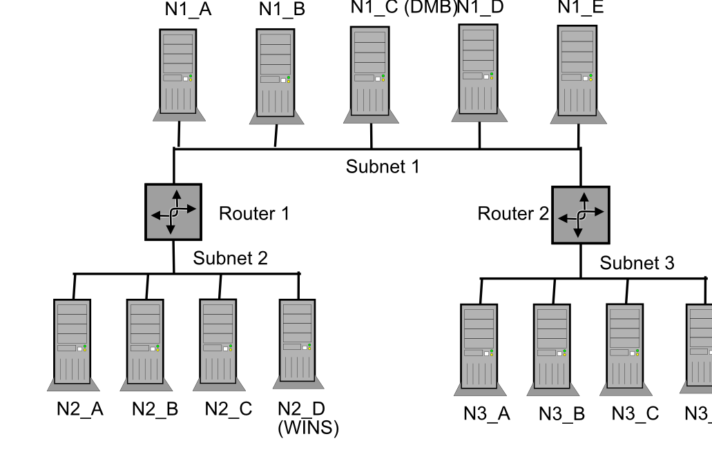

<html><head><meta http-equiv="Content-Type" content="text/html; charset=UTF-8"><title>Chapter 10. ネットワークブラウジング</title><link rel="stylesheet" href="../samba.css" type="text/css"><meta name="generator" content="DocBook XSL Stylesheets V1.75.2"><link rel="home" href="index.html" title="公式のSamba 3.2.x HOWTOとリファレンスガイド"><link rel="up" href="optional.html" title="Part III. 詳細な設定方法"><link rel="prev" href="ChangeNotes.html" title="Chapter 9. Samba 3.xシリーズにおける重要で重大な変更点"><link rel="next" href="passdb.html" title="Chapter 11. アカウント情報データベース"></head><body bgcolor="white" text="black" link="#0000FF" vlink="#840084" alink="#0000FF"><div class="navheader"><table width="100%" summary="Navigation header"><tr><th colspan="3" align="center">Chapter 10. ネットワークブラウジング</th></tr><tr><td width="20%" align="left"><a accesskey="p" href="ChangeNotes.html">Prev</a> </td><th width="60%" align="center">Part III. 詳細な設定方法</th><td width="20%" align="right"> <a accesskey="n" href="passdb.html">Next</a></td></tr></table><hr></div><div class="chapter" title="Chapter 10. ネットワークブラウジング"><div class="titlepage"><div><div><h2 class="title"><a name="NetworkBrowsing"></a>Chapter 10. ネットワークブラウジング</h2></div><div><div class="author"><h3 class="author"><span class="firstname">John</span> <span class="othername">H.</span> <span class="surname">Terpstra</span></h3><div class="affiliation"><span class="orgname">Samba Team<br></span><div class="address"><p><code class="email"><<a class="email" href="mailto:jht@samba.org">jht@samba.org</a>></code></p></div></div></div></div><div><div class="author"><h3 class="author"><span class="firstname">Jelmer</span> <span class="othername">R.</span> <span class="surname">Vernooij</span></h3><div class="affiliation"><span class="orgname">The Samba Team<br></span><div class="address"><p><code class="email"><<a class="email" href="mailto:jelmer@samba.org">jelmer@samba.org</a>></code></p></div></div></div></div><div><div class="author"><h3 class="author"><span class="firstname">Jonathan</span> <span class="surname">Johnson</span></h3><div class="affiliation"><span class="orgname">Sutinen Consulting, Inc.<br></span><div class="address"><p><code class="email"><<a class="email" href="mailto:jon@sutinen.com">jon@sutinen.com</a>></code></p></div></div></div></div><div><p class="pubdate">July 5, 1998</p></div><div><p class="pubdate">Updated: September 20, 2006</p></div></div></div><div class="toc"><p><b>Table of Contents</b></p><dl><dt><span class="sect1"><a href="NetworkBrowsing.html#id2589354">機能と利便性</a></span></dt><dt><span class="sect1"><a href="NetworkBrowsing.html#id2589580">ブラウジングとは何か?</a></span></dt><dt><span class="sect1"><a href="NetworkBrowsing.html#netdiscuss">議論</a></span></dt><dd><dl><dt><span class="sect2"><a href="NetworkBrowsing.html#id2590052">NetBIOS over TCP/IP</a></span></dt><dt><span class="sect2"><a href="NetworkBrowsing.html#id2590787">TCP/IPなしのNetBIOS</a></span></dt><dt><span class="sect2"><a href="NetworkBrowsing.html#adsdnstech">DNSとActive Directory</a></span></dt></dl></dd><dt><span class="sect1"><a href="NetworkBrowsing.html#id2591438">どのようにブラウジングは機能するか</a></span></dt><dd><dl><dt><span class="sect2"><a href="NetworkBrowsing.html#DMB">ワークグループのブラウジングの設定</a></span></dt><dt><span class="sect2"><a href="NetworkBrowsing.html#id2592464">ドメインブラウジングの設定</a></span></dt><dt><span class="sect2"><a href="NetworkBrowsing.html#browse-force-master">強制的にSambaをマスタにする</a></span></dt><dt><span class="sect2"><a href="NetworkBrowsing.html#id2593116">Sambaをドメインマスタにする</a></span></dt><dt><span class="sect2"><a href="NetworkBrowsing.html#id2593398">ブロードキャストアドレスについての注意</a></span></dt><dt><span class="sect2"><a href="NetworkBrowsing.html#id2593426">複数のインタフェース</a></span></dt><dt><span class="sect2"><a href="NetworkBrowsing.html#id2593633">リモートアナウンスパラメータの使用</a></span></dt><dt><span class="sect2"><a href="NetworkBrowsing.html#id2593786">Remote Browse Syncパラメータの使用</a></span></dt></dl></dd><dt><span class="sect1"><a href="NetworkBrowsing.html#id2593881">WINS: The Windows Internetworking Name Server</a></span></dt><dd><dl><dt><span class="sect2"><a href="NetworkBrowsing.html#id2594177">WINSサーバの設定</a></span></dt><dt><span class="sect2"><a href="NetworkBrowsing.html#id2594540">WINS複製</a></span></dt><dt><span class="sect2"><a href="NetworkBrowsing.html#id2594603">静的なWINSエントリ</a></span></dt></dl></dd><dt><span class="sect1"><a href="NetworkBrowsing.html#id2594853">役に立つヒント</a></span></dt><dd><dl><dt><span class="sect2"><a href="NetworkBrowsing.html#id2594867">Windowsのネットワークプロトコル</a></span></dt><dt><span class="sect2"><a href="NetworkBrowsing.html#id2595042">名前解決の順序</a></span></dt></dl></dd><dt><span class="sect1"><a href="NetworkBrowsing.html#id2595266">ブラウジングの技術的な概要</a></span></dt><dd><dl><dt><span class="sect2"><a href="NetworkBrowsing.html#id2595377">Sambaでのブラウジングサポート</a></span></dt><dt><span class="sect2"><a href="NetworkBrowsing.html#id2595609">問題の解決方法</a></span></dt><dt><span class="sect2"><a href="NetworkBrowsing.html#id2595887">サブネット間のブラウジング</a></span></dt></dl></dd><dt><span class="sect1"><a href="NetworkBrowsing.html#id2597059">よくあるエラー</a></span></dt><dd><dl><dt><span class="sect2"><a href="NetworkBrowsing.html#id2597092">SambaのNetBIOS名前キャッシュのフラッシュ</a></span></dt><dt><span class="sect2"><a href="NetworkBrowsing.html#id2597184">サーバリソースがリスト出来ない</a></span></dt><dt><span class="sect2"><a href="NetworkBrowsing.html#id2597237">"<span class="errorname">Unable to browse the network</span>"というエラーメッセージが出た。</a></span></dt><dt><span class="sect2"><a href="NetworkBrowsing.html#id2597291">共有とディレクトリのブラウジングが非常に遅い</a></span></dt><dt><span class="sect2"><a href="NetworkBrowsing.html#id2597528">不正なキャッシュされた共有参照はネットワークブラウジングに影響する</a></span></dt></dl></dd></dl></div><p><a class="indexterm" name="id2589250"></a><a class="indexterm" name="id2589258"></a><a class="indexterm" name="id2589265"></a><a class="indexterm" name="id2589272"></a>この章にはサブネット越しあるいはワークグループ(ドメイン)越しのブラウジングを実行するための早わかりと、さらに詳細な情報を含んでいる。WINSはNetBIOS名からIPアドレスへの名前解決のために最適のツールである。しかし、WINSは名前->アドレス解決方法を除いてブラウズリストの扱いを改善するわけではない。</p><div class="note" title="Note" style="margin-left: 0.5in; margin-right: 0.5in;"><h3 class="title">Note</h3><p><a class="indexterm" name="id2589294"></a>WINSとは何か?</p><p>WINSはNetBIOS名をそのIPアドレスに名前解決する機能を提供する。WINSはNetBIOSネットワーク名のための動的DNSサービスに似ている。</p></div><div class="note" title="Note" style="margin-left: 0.5in; margin-right: 0.5in;"><h3 class="title">Note</h3><p><a class="indexterm" name="id2589315"></a><a class="indexterm" name="id2589322"></a><a class="indexterm" name="id2589329"></a><a class="indexterm" name="id2589335"></a>Microsoft Windows 2000とそれ以降のバージョンでは、NetBIOS over TCP/IPなしで操作するように設定できる。Samba-3とそれ以降のバージョンもこの操作モードをサポートしている。NetBIOS over TCP/IPが無効になっている場合、Microsoft Windowsマシン名の解決を行う主要な手段はDNSとActive Directory経由である。以下の情報は使用するサイトでNetBIOS over TCP/IPが動いていることを仮定している。</p></div><div class="sect1" title="機能と利便性"><div class="titlepage"><div><div><h2 class="title" style="clear: both"><a name="id2589354"></a>機能と利便性</h2></div></div></div><p>Charles Dickensはかつて次のような名言を言った:<span class="quote">“<span class="quote"><span class="emphasis"><em>それはすべての時世の中で最もよい時世でもあれば、すべての時世の中で最も悪い時世でもあった。</em></span></span>”</span>(訳注:二都物語の冒頭部分:佐々木 直次郎訳、青空文庫より)振り返れば振り返るほど、あったことをより切望するが、それが決して戻らないことを望む。(訳注:かなり怪しい)</p><p><a class="indexterm" name="id2589382"></a><a class="indexterm" name="id2589388"></a><a class="indexterm" name="id2589396"></a>多くのMicrosoft Windowsネットワーク管理者に対し、その一節はNetBIOSネットワーキングについて感じていることを要約している。NetBIOSネットワーキングをマスタした人にとって、その気まぐれな性質はよくあることである。そのやんちゃな性質を押さえ込むことが全く管理できない人にとって、NetBIOSはパターソンののろいのようである。</p><p>オーストラリアの植物問題をよく知らない人のために、パターソンののろい、すなわち<span class="emphasis"><em>エキウム・プランタギネウム</em></span>は19世紀の中頃、ヨーロッパからオーストラリアに導入された。それ以来、急激に広まった。種がたくさん出来、平方メートルあたり何千の密度で、種の寿命は7年以上もあり、年中発芽する能力があり、正常な条件がそろえば、持続的に雑草として生える能力がある。</p><p><a class="indexterm" name="id2589440"></a><a class="indexterm" name="id2589450"></a><a class="indexterm" name="id2589456"></a><a class="indexterm" name="id2589463"></a><a class="indexterm" name="id2589470"></a>この章では、動いているNetBIOS(Network Basic Input/Output System) over TCP/IPを通して実装されているSMBに注目するServer Message Block (SMB)ネットワーキングの不可欠な側面を探求する。Sambaは他のプロトコル上でSMBまたはNetBIOSを実装していないので、ネットワーク環境で、どのように設定をするかを知る必要があり、また、すべてのMicrosoft ネットワーククライアント上でTCP/IP以外のものを使うことはないことを単に覚えておけばよい。</p><p><a class="indexterm" name="id2589491"></a><a class="indexterm" name="id2589498"></a>SambaはWINS(Windows Internetworking Name Server)を実現することと、MicrosoftのWINS拡張を実現する能力を提供する。これらの拡張は、通常の範囲のMicrosoft WINSを超えて安定したWINS動作を提供することを支援する。</p><p><a class="indexterm" name="id2589517"></a><a class="indexterm" name="id2589524"></a><a class="indexterm" name="id2589531"></a>WINSはNetBIOS overTCP/IPが動作しているシステムにのみ適用されるサービスである。Microsoft Windows 200x/XPはNetBIOSが無効でも動作することが出来る。そのような場合、WINSは無関係となる。Sambaはこれもサポートする。</p><p><a class="indexterm" name="id2589551"></a><a class="indexterm" name="id2589558"></a><a class="indexterm" name="id2589565"></a>NetBIOSが無効になったこれらのネットワークでは(すなわち、WINSを必要としない)、ホスト名の解決のためにDNSを使うことが必要である。</p></div><div class="sect1" title="ブラウジングとは何か?"><div class="titlepage"><div><div><h2 class="title" style="clear: both"><a name="id2589580"></a>ブラウジングとは何か?</h2></div></div></div><p><a class="indexterm" name="id2589588"></a><a class="indexterm" name="id2589595"></a><a class="indexterm" name="id2589602"></a><a class="indexterm" name="id2589609"></a>一般的には、ブラウジングとは、Microsoft WindowsとSambaサーバがマイネットワーク中に見える事を意味し、特定のサーバのコンピュータアイコンをクリックすると、そのサーバ上の共有と有効なプリンタを表示するウィンドウが開いて表示される。</p><p>とても単純に見えるが、これは実際には、異なった技術の複雑な相互作用によるものである。これらのすべてを行うために使われる技術(か方式)は以下を含む:</p><div class="itemizedlist"><ul class="itemizedlist" type="disc"><li class="listitem"><p>ネットワークへのMicrosoft Windowsマシンの存在を登録。</p></li><li class="listitem"><p>ネットワーク上の他のマシンにそれ自身を通知。</p></li><li class="listitem"><p>ネットワーク上の複数の1つ以上のマシンはローカルアナウンスメントをまとめる。</p></li><li class="listitem"><p>クライアントマシンはマシンのリストをまとめたマシンを見つける。</p></li><li class="listitem"><p>クライアントマシンはマシン名をIPアドレスに変換する。</p></li><li class="listitem"><p>クライアントマシンはターゲットマシンに接続する。</p></li></ul></div><p><a class="indexterm" name="id2589678"></a><a class="indexterm" name="id2589685"></a><a class="indexterm" name="id2589692"></a>ブラウズリスト管理と名前解決を制御するSambaアプリは<code class="filename">nmbd</code>である。nmbdの動作に関連する設定パラメータは以下の通り:</p><p>ブラウジング動作:</p><div class="itemizedlist"><ul class="itemizedlist" type="disc"><li class="listitem"><a class="link" href="smb.conf.5.html#OSLEVEL" target="_top">os level</a></li><li class="listitem"><a class="link" href="smb.conf.5.html#LMANNOUNCE" target="_top">lm announce</a></li><li class="listitem"><a class="link" href="smb.conf.5.html#LMINTERVAL" target="_top">lm interval</a></li><li class="listitem"><a class="link" href="smb.conf.5.html#PREFERREDMASTER" target="_top">preferred master</a>(*)</li><li class="listitem"><a class="link" href="smb.conf.5.html#LOCALMASTER" target="_top">local master</a>(*)</li><li class="listitem"><a class="link" href="smb.conf.5.html#DOMAINMASTER" target="_top">domain master</a>(*)</li><li class="listitem"><a class="link" href="smb.conf.5.html#BROWSELIST" target="_top">browse list</a></li><li class="listitem"><a class="link" href="smb.conf.5.html#ENHANCEDBROWSING" target="_top">enhanced browsing</a></li></ul></div><p>名前解決方法:</p><div class="itemizedlist"><ul class="itemizedlist" type="disc"><li class="listitem"><a class="link" href="smb.conf.5.html#NAMERESOLVEORDER" target="_top">name resolve order</a>(*)</li></ul></div><p>WINS動作:</p><div class="itemizedlist"><ul class="itemizedlist" type="disc"><li class="listitem"><a class="link" href="smb.conf.5.html#DNSPROXY" target="_top">dns proxy</a></li><li class="listitem"><a class="link" href="smb.conf.5.html#WINSPROXY" target="_top">wins proxy</a></li><li class="listitem"><a class="link" href="smb.conf.5.html#WINSSERVER" target="_top">wins server</a>(*)</li><li class="listitem"><a class="link" href="smb.conf.5.html#WINSSUPPORT" target="_top">wins support</a>(*)</li><li class="listitem"><a class="link" href="smb.conf.5.html#WINSHOOK" target="_top">wins hook</a></li></ul></div><p>(*)というマークが付いたものは通常変更が必要なオプションである。これらのパラメータが設定されていなくても、<code class="filename">nmbd</code>は動作することが出来る。</p><p><a class="indexterm" name="id2589936"></a><a class="indexterm" name="id2589942"></a><a class="indexterm" name="id2589949"></a><a class="indexterm" name="id2589956"></a><a class="indexterm" name="id2589963"></a>Sambaでは、wins server と wins support は相互に排他的なオプションである。<code class="literal">nmbd</code>が起動するとき、<code class="filename">smb.conf</code>ファイル中に両方のオプションが設定されていると、起動に失敗する。<code class="literal">nmbd</code>は、それ自身のWINSサーバを使わなければならないWINSサーバとして動作するために、それ自身のインスタンスをフォークする。</p></div><div class="sect1" title="議論"><div class="titlepage"><div><div><h2 class="title" style="clear: both"><a name="netdiscuss"></a>議論</h2></div></div></div><p><a class="indexterm" name="id2590012"></a><a class="indexterm" name="id2590020"></a><a class="indexterm" name="id2590026"></a><a class="indexterm" name="id2590033"></a>すべてのMicrosoft Windows ネットワークは SMBベースのメッセージングを使う。SMBメッセージングはNetBIOSがあってもなくてもよい。Microsoft Windows 200xは下位互換のために、NetBIOS over TCP/IPをサポートする。Microsoftは段階的にNetBIOSサポートを打ち切っているように見える。</p><div class="sect2" title="NetBIOS over TCP/IP"><div class="titlepage"><div><div><h3 class="title"><a name="id2590052"></a>NetBIOS over TCP/IP</h3></div></div></div><p><a class="indexterm" name="id2590060"></a><a class="indexterm" name="id2590067"></a><a class="indexterm" name="id2590074"></a><a class="indexterm" name="id2590081"></a>Sambaは、TCP/IP上でカプセル化することによって、Microsoft Windows NT/200x/XPがするようなNetBIOSを実装している。NetBIOSベースのネットワークはブラウズリストの管理を行うために、ブロードキャストメッセージングを使う。NetBIOS over TCP/IPが動いている時、これはUDPベースのメッセージングを使う。UDPメッセージはブロードキャストかユニキャストのどちらも使える。</p><p><a class="indexterm" name="id2590101"></a>通常、ユニキャストUDPメッセージングのみがルータによって転送される。smb.confの<a class="link" href="smb.conf.5.html#REMOTEANNOUNCE" target="_top">remote announce</a>パラメータはユニキャストUDBを通じて、リモートネットワークセグメントにブラウズアナウンスメントを公開することを支援する。同様に、<code class="filename">smb.conf</code>の<a class="link" href="smb.conf.5.html#REMOTEBROWSESYNC" target="_top">remote browse sync</a>パラメータはユニキャストUDPを使ってブラウズリストの収集を実現する。</p><p>名前検索要求(名前解決)を実行するためにMicrosoft Windowsによって使われる方法はNetBIOSノードタイプと呼ばれる設定パラメータによって決まる。基本的なNetBIOSノードタイプは4つある:</p><a class="indexterm" name="id2590162"></a><a class="indexterm" name="id2590168"></a><a class="indexterm" name="id2590175"></a><a class="indexterm" name="id2590182"></a><a class="indexterm" name="id2590189"></a><a class="indexterm" name="id2590196"></a><a class="indexterm" name="id2590202"></a><a class="indexterm" name="id2590210"></a><div class="itemizedlist"><ul class="itemizedlist" type="disc"><li class="listitem"><p><span class="emphasis"><em>b-node (type 0x01):</em></span>UDPブロードキャストを	    使ってNetBIOSブロードキャスト要求のみを使うWindowsクライアント。</p></li><li class="listitem"><p><span class="emphasis"><em>p-node (type 0x02):</em></span>WINSサーバに直接UDP	    ユニキャストを行う、ポイントツーポイント(NetBIOSユニキャスト)要求を使う	    Windowsクライアント。</p></li><li class="listitem"><p><span class="emphasis"><em>m-node (type 0x04):</em></span>、最初にUDPブロード	    キャストを使ってNetBIOSブロードキャストを行い、次に(NetBIOSユニキャストで)	    WINSサーバに直接UDPユニキャストを行うWindowsクライアント。</p></li><li class="listitem"><p><span class="emphasis"><em>h-node (type 0x08):</em></span>UDPユニキャスト	    (NetBIOSユニキャスト)を使ってWINSサーバに直接要求し、次にUDPブロードキャストを	    使ってNetBIOSブロードキャスト要求をするWindowsクライアント。</p></li></ul></div><p><a class="indexterm" name="id2590270"></a><a class="indexterm" name="id2590277"></a><a class="indexterm" name="id2590284"></a><a class="indexterm" name="id2590292"></a><a class="indexterm" name="id2590298"></a><a class="indexterm" name="id2590306"></a>既定値のWindowsネットワーククライアント(あるいはサーバ)のネットワーク設定は、NetBIOS over TCP/IPを有効にしていて、b-ノードになっている。WINSを使うと、WINSが故障か有効になっていない場合、クライアントがブロードキャストベースの名前解決を使えるように、h-ノード(ハイブリッドノード)動作が意味をなすようになる。</p><p><a class="indexterm" name="id2590326"></a><a class="indexterm" name="id2590335"></a><a class="indexterm" name="id2590342"></a><a class="indexterm" name="id2590349"></a><a class="indexterm" name="id2590356"></a><a class="indexterm" name="id2590363"></a><a class="indexterm" name="id2590369"></a>SambaがSMBサーバ技術のみのネットワーク中では<code class="filename">nmbd</code>のうち少なくとも1台はWINSサーバとして設定する必要がある。これは、ブラウジング環境の管理を簡単にする。もしもおのおののネットワークセグメントが固有のSamba WINSサーバを設定している場合、セグメント間のブラウジングを動作させる唯一の方法は<a class="link" href="smb.conf.5.html#REMOTEANNOUNCE" target="_top">remote announce</a>と<a class="link" href="smb.conf.5.html#REMOTEBROWSESYNC" target="_top">remote browse sync</a>パラメータを<code class="filename">smb.conf</code>ファイルで使うことである。</p><p><a class="indexterm" name="id2590427"></a>もしも全体の複数ネットワークで1つだけのWINSサーバを使う場合、<a class="link" href="smb.conf.5.html#REMOTEANNOUNCE" target="_top">remote announce</a>と<a class="link" href="smb.conf.5.html#REMOTEBROWSESYNC" target="_top">remote browse sync</a>パラメータの使用は必須ではない。</p><p><a class="indexterm" name="id2590466"></a>Samba-3では、WINS複製は作業中である。大量のコードがコミットされていたが、まだ改良が必要である。Samba-3.0.20のリリース時点ではまだサポートされた機能ではない。希望としては、Samba-3のどこかのリリース時点でサポートされた機能になることを予定している。開発者がこれを完了させようと思うほどの、十分な重要性がないという理由で、これは遅れている。</p><p><a class="indexterm" name="id2590488"></a><a class="indexterm" name="id2590495"></a><a class="indexterm" name="id2590502"></a><a class="indexterm" name="id2590509"></a><a class="indexterm" name="id2590515"></a><a class="indexterm" name="id2590523"></a><a class="indexterm" name="id2590530"></a><a class="indexterm" name="id2590537"></a>現時点で、SambaのWINSはMS-WINS複製をサポートしていない。これは、SambaをWINSサーバとして設定しても、ネットワーク上で、1つだけ<code class="filename">nmbd</code>をWINSサーバとして設定する必要がある。あるサイトでは(サブネット単位に1つのサーバを)冗長性のために、複数のSamba WINSサーバを使っていて、セグメントをまたいですべてのセグメントのブラウズリストを集めるために、<a class="link" href="smb.conf.5.html#REMOTEBROWSESYNC" target="_top">remote browse sync</a>と<a class="link" href="smb.conf.5.html#REMOTEANNOUNCE" target="_top">remote announce</a>を使っている。この設定では、クライアントがローカル名の解決のみが出来るので、他のサブネット上を見ることができる、サーバのIPアドレスを解決するために他のサブネット上の名前を解決するためのDNSを使うように設定しなければならない。この設定は推奨されないが、実用的なやり方として(すなわち、<span class="quote">“<span class="quote">もしも他の場合がすべて失敗の場合</span>”</span>というシナリオ)、記述されている。NetBIOS over TCP/IPはとてもひどくて管理しにくいプロトコルである。この置き換えとして、NetBIOSless SMB over TCP/IP is notwithout its own manageability concerns.NetBIOSベースのネットワークは妥協とトレードオフの固まりである。WINSはDNSに格納出来ない情報を格納する。従って、DNSはNetBIOS over TCP/IPが使われている時にWINSから得られるものよりも貧弱な代わりにしかならない。WindowsクライアントはWINSを使うように設計されている。</p><p><a class="indexterm" name="id2590626"></a><a class="indexterm" name="id2590632"></a><a class="indexterm" name="id2590639"></a>最後に、ブラウズリストは15分間よりも短い間隔で繰り返される信頼性のないブロードキャストメッセージの集合から校正されていることに注意。これは、ブラウズリストを作成するために時間がかかると言うことであり、特に、ネットワークセグメントをまたぐ場合は、安定するまでには45分かかる可能性があるということである。</p><p><a class="indexterm" name="id2590659"></a>Microsoft Windows 200x/XPシステムでホスト名をIPアドレスに解決しようとする場合、以下の手順で行う:</p><div class="orderedlist"><ol class="orderedlist" type="1"><li class="listitem"><p>	<code class="filename">hosts</code>ファイルを調べる。これは<code class="filename">%SystemRoot%\System32\Drivers\etc</code>にある。	</p></li><li class="listitem"><p>	DNS 検索を実行する。	</p></li><li class="listitem"><p>	NetBIOSネームキャッシュを調べる。	</p></li><li class="listitem"><p>	WINSサーバに問い合わせる。	</p></li><li class="listitem"><p>	UDPでブロードキャストの名前検索を行う。	</p></li><li class="listitem"><p>	<code class="filename">%SystemRoot%\System32\Drivers\etc</code>にあるLMHOSTSファイルのエントリを調べる。	</p></li></ol></div><p><a class="indexterm" name="id2590734"></a><a class="indexterm" name="id2590741"></a><a class="indexterm" name="id2590748"></a><a class="indexterm" name="id2590755"></a>どのようにNetBIOS over TCP/IPプロトコルが実装されているを考えた上で、WINSのみが、TEMPTATION<1C> というネットワークログオンサーバを探すためのNetBIOS名前問い合わせのようなサービス指向の名前の、信頼性のある名前検索を解決する能力を持つ。実際、Microsoft ADSでの実装は特に拡張されたサービス指向のDNSエントリ全体を管理するようになっている。このタイプの機能はNetBIOS over TCP/IPプロトコルの名前空間では実装も、サポートもされていない。</p></div><div class="sect2" title="TCP/IPなしのNetBIOS"><div class="titlepage"><div><div><h3 class="title"><a name="id2590787"></a>TCP/IPなしのNetBIOS</h3></div></div></div><p><a class="indexterm" name="id2590796"></a><a class="indexterm" name="id2590802"></a><a class="indexterm" name="id2590809"></a>すべてのTCP/IPが有効なシステムは、いろいろなホスト名解決方法を使う。TCP/IPのホスト名解決で最初に使う方法は固定のファイル(<code class="filename">/etc/hosts</code>)かDNSである。DNSはインターネットを使えるようにする技術である。DNSベースのホスト名解決はほとんどすべてのTCP/IPが有効なシステムでサポートされている。ごくわずかの組み込みシステムのみがDNSのサポートをしていない。</p><p><a class="indexterm" name="id2590841"></a><a class="indexterm" name="id2590847"></a><a class="indexterm" name="id2590854"></a><a class="indexterm" name="id2590861"></a>Windows 200x/XPはダイナミックDNSサーバ(DDNS)にそのホスト名を登録できる。Windows 200x/XP上で <code class="literal">ipconfig /registerdns</code>を使うことで、ダイナミックDNSサーバに強制的に登録できる。</p><p><a class="indexterm" name="id2590885"></a><a class="indexterm" name="id2590892"></a><a class="indexterm" name="id2590898"></a>Active Directoyでは、正確に動作しているDNSサーバが確実に必要である。正しく設定されていて動作しているDNSサーバがない場合、Microsoft Windows クライアントとサーバはお互いを認識できず、そのためネットワークサービスはひどく使い物にならないだろう。</p><p><a class="indexterm" name="id2590919"></a><a class="indexterm" name="id2590926"></a><a class="indexterm" name="id2590933"></a><a class="indexterm" name="id2590940"></a><a class="indexterm" name="id2590947"></a><a class="indexterm" name="id2590954"></a>raw SMB over TCP/IP(NetBIOSレイヤなし)の使用は、Active Directoryドメインのみで行える。SambaはActive Directory ドメインコントローラではない:故に、NetBIOSを<span class="emphasis"><em>使わないで</em></span>同じ時にSambaをドメインコントローラとして動かすのは不可能である。SambaをActive Directoryのメンバサーバ(DMS)として動かしているとき、NetBIOS over TCP/IPを使わないでSambaを設定することは可能である。Samba DMSはActive Directoyドメインに完全に統合できるが、もしも、NetBIOS over TCP/IPが無効の場合、SambaまたはADS環境のどちらかで自動的に生成されないという理由で、SambaDMS用に適切なDNSエントリを手動で作成する必要がある。</p></div><div class="sect2" title="DNSとActive Directory"><div class="titlepage"><div><div><h3 class="title"><a name="adsdnstech"></a>DNSとActive Directory</h3></div></div></div><p><a class="indexterm" name="id2591004"></a><a class="indexterm" name="id2591013"></a><a class="indexterm" name="id2591019"></a><a class="indexterm" name="id2591026"></a><a class="indexterm" name="id2591033"></a>時折、Microsoft DNSサーバの代わりにUNIXベースのDDNSサーバを使いたいというUNIXネットワーク管理者の要望を聞くことがある。これが誰かにとって都合がよい間、MicrosoftWindows 200x DNSサーバはActive Directoryと共に動作するように自動的に設定される。BIND 8または9を使うのは可能だが、Microsoft Active Directoryクライアントが基本的なネットワークサービスを確実に使えるために、ホスト名を解決できるために、サービスレコード(SRVレコード)を確実に作成することがほとんど必要となる。以下は、Active Directoryが要求する既定値のサービスレコードのいくつかである:</p><p><a class="indexterm" name="id2591071"></a><a class="indexterm" name="id2591078"></a><a class="indexterm" name="id2591084"></a>Active Directoryで必要とされるSRV(サービス)レコードを十分にサポートする能力をBIND9を使うときに望まれるため、Active DirectoryでDDNSを使うことは強く推奨される。もちろん、ADSが動いているとき、ADSとMicrosoft DNSの間で自然な類似性があるという理由で、Microsoft固有のDDNSサーバを使うことは意味があることである。</p><div class="variablelist"><dl><dt><span class="term">_ldap._tcp.pdc._msdcs.<span class="emphasis"><em>Domain</em></span></span></dt><dd><p>	これは、ドメイン内のWindows NT PDCアドレスを提供する。	</p></dd><dt><span class="term">_ldap._tcp.pdc._msdcs.<span class="emphasis"><em>DomainTree</em></span></span></dt><dd><p>	ドメイン内のグローバルカタログのアドレスを解決する。        </p></dd><dt><span class="term">_ldap._tcp.<span class="emphasis"><em>site</em></span>.sites.writable._msdcs.<span class="emphasis"><em>Domain</em></span></span></dt><dd><p>	サイト上のドメインコントローラの一覧を提供する。        </p></dd><dt><span class="term">_ldap._tcp.writable._msdcs.<span class="emphasis"><em>Domain</em></span></span></dt><dd><p>	Enumerates list of domain controllers that have the writable copies of the Active Directory data store.        </p></dd><dt><span class="term">_ldap._tcp.<span class="emphasis"><em>GUID</em></span>.domains._msdcs.<span class="emphasis"><em>DomainTree</em></span></span></dt><dd><p>	グローバルな一意の識別子を使うマシンをクライアントが認識するためにMicrosoft Windowsによって使われるエントリ。	</p></dd><dt><span class="term">_ldap._tcp.<span class="emphasis"><em>Site</em></span>.gc._msdcs.<span class="emphasis"><em>DomainTree</em></span></span></dt><dd><p>	サイト設定に依存するグローバルカタログサーバをクライアントが認識するためにMicrosoft Windowsによって使われる。	</p></dd></dl></div><p>	サンプルのドメイン<code class="constant">quenya.org</code>のために基本的なサービスを	Microsoftクライアントが認識するために使われる特定のエントリは以下を含む:	</p><div class="itemizedlist"><ul class="itemizedlist" type="disc"><li class="listitem"><p>		_kerberos._udp.quenya.org  UDP経由でKDCサーバに接続す		るために使われる。のエントリはおのおののKDC向けにポート88にしな		ければならない。		</p></li><li class="listitem"><p>		_kpasswd._udp.quenya.org ユーザのパスワード変更処理を		行わなければならない時に<code class="constant">kpasswd</code>サーバを見つけるときに使う。		このレコードはマスタKDCのポート464でなければならない。		</p></li><li class="listitem"><p>		_kerberos._tcp.quenya.org  TCP経由でKDCサーバを見つけ		るときに使う。このエントリはおのおののKDCでポート88でなければならない。		</p></li><li class="listitem"><p>		_ldap._tcp.quenya.org  PDC上でLDAPサービスを見つける		のに使う。このレコードはPDCのためにポート389でなければならない。		</p></li><li class="listitem"><p>		_kpasswd._tcp.quenya.org  ユーザパスワード変更を行う		ことを許可するために<code class="constant">kpasswd</code>を探すときに使う。これはポート		464でなければならない。		</p></li><li class="listitem"><p>		_gc._tcp.quenya.org  グローバル型ログサーバを探すとき		に使う。これはポート3268でなければならない。		</p></li></ul></div><p>	以下のレコードも、Windows ADS ドメインコントローラ上の重要なサービスを	探すために、Windowsドメインクライアントによって使われる。	</p><div class="itemizedlist"><ul class="itemizedlist" type="disc"><li class="listitem"><p>		_ldap._tcp.pdc._msdcs.quenya.org		</p></li><li class="listitem"><p>		_ldap.gc._msdcs.quenya.org		</p></li><li class="listitem"><p>		_ldap.default-first-site-name._sites.gc._msdcs.quenya.org		</p></li><li class="listitem"><p>		_ldap.{SecID}.domains._msdcs.quenya.org		</p></li><li class="listitem"><p>		_ldap._tcp.dc._msdcs.quenya.org		</p></li><li class="listitem"><p>		_kerberos._tcp.dc._msdcs.quenya.org		</p></li><li class="listitem"><p>		_ldap.default-first-site-name._sites.dc._msdcs.quenya.org		</p></li><li class="listitem"><p>		_kerberos.default-first-site-name._sites.dc._msdcs.queyna.org		</p></li><li class="listitem"><p>		SecID._msdcs.quenya.org		</p></li></ul></div><p>	正しいDNSエントリの存在は以下を実行することによって検証できる:</p><pre class="screen"><code class="prompt">root# </code> dig @frodo -t any _ldap._tcp.dc._msdcs.quenya.org; <lt;>> DiG 9.2.2 <lt;>> @frodo -t any _ldap._tcp.dc._msdcs.quenya.org;; global options:  printcmd;; Got answer:;; ->>HEADER<<- opcode: QUERY, status: NOERROR, id: 3072;; flags: qr aa rd ra; QUERY: 1, ANSWER: 2, AUTHORITY: 0, ADDITIONAL: 2;; QUESTION SECTION:;_ldap._tcp.dc._msdcs.quenya.org. IN        ANY;; ANSWER SECTION:_ldap._tcp.dc._msdcs.quenya.org. 600 IN SRV 0 100 389 frodo.quenya.org._ldap._tcp.dc._msdcs.quenya.org. 600 IN SRV 0 100 389 noldor.quenya.org.;; ADDITIONAL SECTION:frodo.quenya.org.  3600  IN      A       10.1.1.16noldor.quenya.org. 1200  IN      A       10.1.1.17;; Query time: 0 msec;; SERVER: frodo#53(10.1.1.16);; WHEN: Wed Oct  7 14:39:31 2004;; MSG SIZE  rcvd: 171</pre><p>	</p></div></div><div class="sect1" title="どのようにブラウジングは機能するか"><div class="titlepage"><div><div><h2 class="title" style="clear: both"><a name="id2591438"></a>どのようにブラウジングは機能するか</h2></div></div></div><p><a class="indexterm" name="id2591447"></a><a class="indexterm" name="id2591454"></a><a class="indexterm" name="id2591461"></a><a class="indexterm" name="id2591467"></a><a class="indexterm" name="id2591474"></a>Microsoft WindowsマシンはそのNetBIOS名を起動時に登録する(すなわち、動作に対するおのおののサービスタイプのためのマシン名)。この名前登録の正確な方法は、Microsoft Windowsクライアント/サーバにWINSサーバアドレスが与えられているか否かか、LMHOSTS検索が有効になっているか否か、NetBIOS名の名前解決にDNSを使うかどうかか否か、あるいはその他によって決まる。</p><p><a class="indexterm" name="id2591496"></a><a class="indexterm" name="id2591503"></a><a class="indexterm" name="id2591510"></a>WINSサーバがない場合、名前検索と同様、すべての名前登録は、UDPブロードキャストによって行われる。これは、すべての名前とIPアドレスの一覧を用意するLMHOSTを使う以外、ローカルサブネット単位で分割した名前解決を行う。このような状態で、リモートのMicrosoft Windowsネットワークのブラウズリスト中にSambaサーバの名前を強制的に入れ込むことによる方法を提供する(<a class="link" href="smb.conf.5.html#REMOTEANNOUNCE" target="_top">remote announce</a>を使って)。</p><p><a class="indexterm" name="id2591543"></a><a class="indexterm" name="id2591549"></a><a class="indexterm" name="id2591556"></a>WINSサーバを使う場合、Microsoft Windows蔵案とはWINSサーバにUDPユニキャストで名前を登録する。このようなパケットはルーティング出来、WINSはルーティングされたネットワークを超えて名前解決が出来る。</p><p><a class="indexterm" name="id2591577"></a><a class="indexterm" name="id2591583"></a><a class="indexterm" name="id2591592"></a><a class="indexterm" name="id2591599"></a><a class="indexterm" name="id2591606"></a><a class="indexterm" name="id2591613"></a><a class="indexterm" name="id2591620"></a><a class="indexterm" name="id2591626"></a>スタートアップ処理中、すでに存在していなければ、ローカルマスタブラウザ(LMB)の選定が起こる。おのおののNetBIOSネットワークで、ある1つのマシンがドメインマスタブラウザ(DMB)として機能するように選択される。このドメインブラウジングは、Microsoftセキュリティドメインコントロールとは何らの関係もない。その代わり、DMBは(WINSまたはLMHOSTを使って見つけた)おのおののLMBに接続する役割を行い、ブラウズリストの内容を交換する。このようにして、すべてのマスタブラウザは、結果として、ネットワーク上にあるすべてのマシンの完全な一覧を得ることになる。毎11から15分ごとに、どのマシンがマスタブラウザになるかという選択が行われる。使用される選択基準の性質により、最も大きなuptime、あるいは最も上位のプロトコルバージョン、あるいは、そのたの基準を持つものがDMBとして選択される。</p><p><a class="indexterm" name="id2591667"></a><a class="indexterm" name="id2591674"></a><a class="indexterm" name="id2591681"></a><a class="indexterm" name="id2591688"></a><a class="indexterm" name="id2591695"></a><a class="indexterm" name="id2591702"></a><a class="indexterm" name="id2591709"></a><a class="indexterm" name="id2591716"></a>WINSサーバが使われているとき、DMBはそのIPアドレスをドメインの名前とNetBIOS名前タイプ1B(すなわちDOMAIN<1B>)を使ってWINSサーバに登録する。WINSサーバを使うすべてのLMBも、ドメインの名前とNetBIOS名前タイプ1Dを使ってそのIPアドレスを登録する。タイプ1Bの名前はドメインセキュリティコンテキスト内であるサーバ1つだけに割り当てられ、たった1つのタイプ1Dの名前がおのおののネットワークセグメントで登録される。タイプ1Dの名前を登録したマシンは、そのマシンがいるネットワークセグメントにおける、ブラウズリストメンテナの権限を持つ。DMBはLMBから得られたブラウズリストを同期させることに責任がある。</p><p><a class="indexterm" name="id2591745"></a>ネットワークをブラウズしようとするクライアントは、このリストを使うが、有効なIPアドレスへの名前解決の有効性に依存する。</p><p><a class="indexterm" name="id2591762"></a>Any configuration that breaks name resolution and/or browsing intrinsics will annoy users because they willhave to put up with protracted inability to use the network services.</p><p><a class="indexterm" name="id2591775"></a><a class="indexterm" name="id2591782"></a><a class="indexterm" name="id2591788"></a><a class="indexterm" name="id2591795"></a><a class="indexterm" name="id2591802"></a><a class="indexterm" name="id2591808"></a>Sambaは<code class="filename">smb.conf</code>ファイル中に<a class="link" href="smb.conf.5.html#REMOTEBROWSESYNC" target="_top">remote browse sync</a>パラメータを使うことで、ルーティングされたネットワーク越しにブラウズリストの同期を強制的に行う機能をサポートしている。この機能のためにSambaはリモートネットワーク上のLMBに接続し、ブラウズリストの同期を要求する。これはルータによって分離された2つのネットワークを効果的に接続する。2つのリモートネットワークはブロードキャストベースの名前解決か、WINSベースの名前解決のどちらを使っても良いが、<a class="link" href="smb.conf.5.html#REMOTEBROWSESYNC" target="_top">remote browse sync</a>パラメータがブラウズリストの同期を提供するが、それは名前からアドレスへの解決とは異なることに注意する必要がある。別の言い方をすると、サブネット間のブラウジングをきちんと機能させるためには、名前解決メカニズムが提供されていることが基本であるということである。このメカニズムとはDNS、<code class="filename">/etc/hosts</code>、あるいはその他である。</p><div class="sect2" title="ワークグループのブラウジングの設定"><div class="titlepage"><div><div><h3 class="title"><a name="DMB"></a>ワークグループのブラウジングの設定</h3></div></div></div><p><a class="indexterm" name="id2591889"></a><a class="indexterm" name="id2591896"></a><a class="indexterm" name="id2591903"></a><a class="indexterm" name="id2591909"></a><a class="indexterm" name="id2591916"></a><a class="indexterm" name="id2591923"></a>ネットワークが、NTドメインでない、ワークグループに属するマシンを含むサブネット間のブラウジングを設定するために、ある1つのSambaサーバをDMBにする必要がある(NTドメイン中では両方の役割を同じマシンが担うが、これはPDCとは違うと言うことに注意)。DMBの役割はワークグループ中に参加しているマシンがあるすべてのサブネット上のLMBからブラウズリストを収集することである。DMBとして設定されたマシンがないと、おのおののサブネットは分離された、他のサブネットのマシンを見ることができないワークグループとなってしまう。これが、ワークグループに対してサブネット間ブラウジングをさせるDMBの存在理由である。</p><p><a class="indexterm" name="id2591963"></a>ワークグループ環境で、DMBはSambaサーバでなければならず、ワークグループ名につき1つのDMBでなければならない。SambaサーバをDMBとして設定するためには、<code class="filename">smb.conf</code>ファイル中の<em class="parameter"><code>[global]</code></em>セクションに以下のオプションを記述する:</p><p></p><table border="0" summary="Simple list" class="simplelist"><tr><td><a class="indexterm" name="id2591998"></a><em class="parameter"><code>domain master = yes</code></em></td></tr></table><p></p><p><a class="indexterm" name="id2592013"></a><a class="indexterm" name="id2592020"></a>DMBはそれがいるサブネット上でのLMBであるべきである。これを達成するためには、<code class="filename">smb.conf</code>ファイル中の<em class="parameter"><code>[global]</code></em>セクション中に、<a class="link" href="NetworkBrowsing.html#dmbexample" title="Example 10.1. ドメインマスタブラウザのsmb.conf">ドメインマスタブラウザのsmb.conf</a>で示されるオプションを設定する:</p><div class="example"><a name="dmbexample"></a><p class="title"><b>Example 10.1. ドメインマスタブラウザのsmb.conf</b></p><div class="example-contents"><table border="0" summary="Simple list" class="simplelist"><tr><td> </td></tr><tr><td><em class="parameter"><code>[global]</code></em></td></tr><tr><td><a class="indexterm" name="id2592078"></a><em class="parameter"><code>domain master = yes</code></em></td></tr><tr><td><a class="indexterm" name="id2592090"></a><em class="parameter"><code>local master = yes</code></em></td></tr><tr><td><a class="indexterm" name="id2592102"></a><em class="parameter"><code>preferred master = yes</code></em></td></tr><tr><td><a class="indexterm" name="id2592114"></a><em class="parameter"><code>os level = 65</code></em></td></tr></table></div></div><br class="example-break"><p><a class="indexterm" name="id2592128"></a><a class="indexterm" name="id2592135"></a>必要であれば、DMBはWINSサーバと同じマシンでも良い。</p><p><a class="indexterm" name="id2592148"></a><a class="indexterm" name="id2592155"></a><a class="indexterm" name="id2592161"></a>次に、ワークグループに対するLMBとして振る舞うことが出来るマシンを、おのおののサブネットごとに存在するようにする。任意のWindows NT/200x/XPマシンはこれが出来、Windows 9x/Meマシン(しばしばリブートの必要があるため、この目的に使うのには適さないが)もできる。SambaサーバをLMBにするには、以下の、<a class="link" href="NetworkBrowsing.html#lmbexample" title="Example 10.2. ローカルマスタブラウザのsmb.conf">ローカルマスタブラウザのsmb.conf</a>で示されているように、<code class="filename">smb.conf</code>ファイルの<em class="parameter"><code>[global]</code></em>セクション中に以下のオプションを記述する。</p><div class="example"><a name="lmbexample"></a><p class="title"><b>Example 10.2. ローカルマスタブラウザのsmb.conf</b></p><div class="example-contents"><table border="0" summary="Simple list" class="simplelist"><tr><td> </td></tr><tr><td><em class="parameter"><code>[global]</code></em></td></tr><tr><td><a class="indexterm" name="id2592225"></a><em class="parameter"><code>domain master = no</code></em></td></tr><tr><td><a class="indexterm" name="id2592237"></a><em class="parameter"><code>local master = yes</code></em></td></tr><tr><td><a class="indexterm" name="id2592249"></a><em class="parameter"><code>preferred master = yes</code></em></td></tr><tr><td><a class="indexterm" name="id2592260"></a><em class="parameter"><code>os level = 65</code></em></td></tr></table></div></div><br class="example-break"><p><a class="indexterm" name="id2592275"></a>おのおののサブネットごとに1つ以上のSambaサーバに対してこれを行わないこと。そうしないと、LMBになるための競合が発生してしまう。</p><p><a class="indexterm" name="id2592291"></a><a class="indexterm" name="id2592298"></a><a class="link" href="smb.conf.5.html#LOCALMASTER" target="_top">local master</a>パラメータはSambaに、LMBとして機能するようにさせる。<a class="link" href="smb.conf.5.html#PREFERREDMASTER" target="_top">preferred master</a>は、<code class="literal">nmbd</code>に対して起動時にブラウザ選択を強制的に実行するようにさせ、<a class="link" href="smb.conf.5.html#OSLEVEL" target="_top">os level</a>パラメータは、Sambaが、ブラウザ選択に勝つために必要十分となる大きな値を設定する。</p><p><a class="indexterm" name="id2592353"></a>もしもLMBにしたいNTマシンがサブネット上にある場合、以下の、<a class="link" href="NetworkBrowsing.html#nombexample" title="Example 10.3. マスタブラウザにならないsmb.conf">マスタブラウザにならないsmb.conf</a>で示されているように、<code class="filename">smb.conf</code>ファイル中の<em class="parameter"><code>[global]</code></em>セクション中に、以下のパラメータを設定して、SambaがLMBにならないようにする。</p><p></p><div class="example"><a name="nombexample"></a><p class="title"><b>Example 10.3. マスタブラウザにならないsmb.conf</b></p><div class="example-contents"><table border="0" summary="Simple list" class="simplelist"><tr><td> </td></tr><tr><td><em class="parameter"><code>[global]</code></em></td></tr><tr><td><a class="indexterm" name="id2592414"></a><em class="parameter"><code>domain master = no</code></em></td></tr><tr><td><a class="indexterm" name="id2592426"></a><em class="parameter"><code>local master = no</code></em></td></tr><tr><td><a class="indexterm" name="id2592437"></a><em class="parameter"><code>preferred master = no</code></em></td></tr><tr><td><a class="indexterm" name="id2592449"></a><em class="parameter"><code>os level = 0</code></em></td></tr></table></div></div><p><br class="example-break"></p></div><div class="sect2" title="ドメインブラウジングの設定"><div class="titlepage"><div><div><h3 class="title"><a name="id2592464"></a>ドメインブラウジングの設定</h3></div></div></div><p><a class="indexterm" name="id2592472"></a><a class="indexterm" name="id2592478"></a><a class="indexterm" name="id2592485"></a><a class="indexterm" name="id2592491"></a>もしも、Windows NTドメインにSambaサーバを追加する場合、SambaサーバをDMBとして設定してはならない。既定値では、ドメインに対するWindows NT PDCはそのドメインに対するDMBでもある。WINSを使って、DMB NetBIOS名(<em class="replaceable"><code>DOMAIN</code></em><1B>)をSambaサーバがPDCとして登録すると、ネットワークブラウジングは崩壊する。</p><p><a class="indexterm" name="id2592518"></a>Windows NT PDCを含んでいる以外のサブネットでは、Sambaサーバを説明しているようにLMBとして設定しても良い。SambaサーバをLMBにするためには、以下の<a class="link" href="NetworkBrowsing.html#remsmb" title="Example 10.4. ローカルマスタブラウザにするためのsmb.conf">ローカルマスタブラウザにするためのsmb.conf</a>のように、<code class="filename">smb.conf</code>ファイル中の<em class="parameter"><code>[global]</code></em>セクション中に以下のオプションを設定する。</p><div class="example"><a name="remsmb"></a><p class="title"><b>Example 10.4. ローカルマスタブラウザにするためのsmb.conf</b></p><div class="example-contents"><table border="0" summary="Simple list" class="simplelist"><tr><td> </td></tr><tr><td><em class="parameter"><code>[global]</code></em></td></tr><tr><td><a class="indexterm" name="id2592580"></a><em class="parameter"><code>domain master = no</code></em></td></tr><tr><td><a class="indexterm" name="id2592592"></a><em class="parameter"><code>local master = yes</code></em></td></tr><tr><td><a class="indexterm" name="id2592603"></a><em class="parameter"><code>preferred master = yes</code></em></td></tr><tr><td><a class="indexterm" name="id2592615"></a><em class="parameter"><code>os level = 65</code></em></td></tr></table></div></div><br class="example-break"><p><a class="indexterm" name="id2592630"></a><a class="indexterm" name="id2592637"></a>もしも、同じサブネット上のマシンとの間で選択作業を行いたいのであれば、<a class="link" href="smb.conf.5.html#OSLEVEL" target="_top">os level</a>パラメータをより小さな値に設定しても良い。これを行うことで、LMBになり得る、動いているマシンの順番を調整することができる。より詳細については<a class="link" href="NetworkBrowsing.html#browse-force-master" title="強制的にSambaをマスタにする">強制的にSambaをマスタにする</a>を参照のこと。</p><p><a class="indexterm" name="id2592674"></a><a class="indexterm" name="id2592681"></a><a class="indexterm" name="id2592688"></a>もしもすべてのサブネット上でのドメインのメンバであるWindows NTマシンがあり、それが常時確実に動いているならば、以下で示される、<a class="link" href="NetworkBrowsing.html#xremmb" title="Example 10.5. マスタブラウザにならないsmb.conf">マスタにブラウザにならない<code class="filename">smb.conf</code></a>のように、<code class="filename">smb.conf</code>ファイル中の<em class="parameter"><code>[global]</code></em>セクション中で以下のオプションを指定することで、Sambaがブラウザ選択をしなくなり、LMBに絶対にならないようにすることができる。</p><p></p><div class="example"><a name="xremmb"></a><p class="title"><b>Example 10.5. マスタブラウザにならない<code class="filename">smb.conf</code></b></p><div class="example-contents"><em class="parameter"><code>[global]</code></em><a class="link" href="smb.conf.5.html#DOMAINMASTER" target="_top">domain master = no</a><a class="link" href="smb.conf.5.html#LOCALMASTER" target="_top">local master = no</a><a class="link" href="smb.conf.5.html#PREFERREDMASTER" target="_top">preferred master = no</a><a class="link" href="smb.conf.5.html#OSLEVEL" target="_top">os level = 0</a></div></div><p><br class="example-break"></p></div><div class="sect2" title="強制的にSambaをマスタにする"><div class="titlepage"><div><div><h3 class="title"><a name="browse-force-master"></a>強制的にSambaをマスタにする</h3></div></div></div><p><a class="indexterm" name="id2592815"></a><a class="indexterm" name="id2592822"></a><a class="indexterm" name="id2592828"></a><a class="indexterm" name="id2592835"></a><a class="indexterm" name="id2592842"></a><a class="indexterm" name="id2592849"></a><a class="indexterm" name="id2592855"></a>マスタブラウズになるマシンはブロードキャストを使った選択プロセスで決められる。各選択パケットには選択作業において、ホストがどのような優先項目(バイアス)を持つべきかを決定するための、たくさんのパラメータを含んでいる。既定値では、Sambaは、各Windowsサーバ又はクライアントについて、低い優先度を持ち結果として選択からは外れる。</p><p>Sambaを選択したい場合には、<code class="filename">smb.conf</code>中の<a class="link" href="smb.conf.5.html#OSLEVEL" target="_top">os level</a>グローバルオプションをより大きい数字に設定する。既定値では20である。34を使うと、他のすべてのシステム(他のSambaシステムを除く)との選択に勝つ。</p><p><a class="link" href="smb.conf.5.html#OSLEVEL" target="_top">os level</a>が2の場合はWindows for WorkgroupsとWindows 9x/Meに勝つが、Microsoft NT/200x サーバには勝てない。Microsoft Windows NT/200xサーバのドメインコントローラはレベル32を使う。os levelの最大値は255である。</p><p><a class="indexterm" name="id2592920"></a><a class="indexterm" name="id2592927"></a><a class="indexterm" name="id2592933"></a><a class="indexterm" name="id2592940"></a>もしも、起動時にSambaに選択を強制させたいならば、<code class="filename">smb.conf</code>中の<a class="link" href="smb.conf.5.html#PREFERREDMASTER" target="_top">preferred master</a>グローバルオプションを<code class="constant">yes</code>に設定する。Sambaは優先マスタブラウザでない、他のポテンシャルマスタブラウザよりも若干の優位性を持つようになる。これは注意深く使うこと。そうしないと、同じローカルサブネット上で<a class="link" href="smb.conf.5.html#PREFERREDMASTER" target="_top">preferred master</a>を<code class="constant">yes</code>に設定した2つのホスト(Windows 9x/MeかNT/200x/XPかSamba)があった場合、LMBになるための強制的な選択が、定期的かつ継続的に発生してしまう。</p><p><a class="indexterm" name="id2592997"></a><a class="indexterm" name="id2593003"></a><a class="indexterm" name="id2593010"></a><a class="indexterm" name="id2593017"></a><a class="indexterm" name="id2593024"></a>もしも、Sambaを<span class="emphasis"><em>DMB</em></span>にしたいならば、ブロードキャストが届かない分離されたサブネット上のLMBでもない、LANまたはWAN全体のDMBにSambaがならないという理由で、<a class="link" href="smb.conf.5.html#PREFERREDMASTER" target="_top">preferred master</a>も<code class="constant">yes</code>に設定することを推奨する。</p><p><a class="indexterm" name="id2593057"></a><a class="indexterm" name="id2593063"></a><a class="indexterm" name="id2593070"></a><a class="indexterm" name="id2593077"></a><a class="indexterm" name="id2593084"></a>2つのSambaサーバがドメイン用にDMBになるように試みることは出来る。最初のサーバはDMBになる。その他のすべてのサーバは5分ごとにDMBになるように試行する。それらは、すでに他のSambaサーバがDMBであることを見つけて失敗する。これは、現在動いているDMBが故障したときに、自動的な冗長性を提供する。ブラウザ選択のネットワークバンド幅のオーバヘッドは相対的に小さく、おおよそ1つの選択ごとかつ1つのマシンごとに4つのUDPパケットを要求する。最小のUDPパケットは576バイトである。</p></div><div class="sect2" title="Sambaをドメインマスタにする"><div class="titlepage"><div><div><h3 class="title"><a name="id2593116"></a>Sambaをドメインマスタにする</h3></div></div></div><p><a class="indexterm" name="id2593124"></a><a class="indexterm" name="id2593131"></a><a class="indexterm" name="id2593138"></a><a class="indexterm" name="id2593145"></a>ドメインマスタブラウザは複数のサブネットのブラウザリストを集めることに責任があり、それゆえ、サブネット間でのブラウジングが可能になる。<code class="filename">smb.conf</code>中に<a class="link" href="smb.conf.5.html#DOMAINMASTER" target="_top">domain master = yes</a>を設定することで、Sambaをドメインマスタブラウザにすることが出来る。既定値では、ドメインマスタになる設定ではない。</p><p><a class="indexterm" name="id2593183"></a><a class="indexterm" name="id2593190"></a>SambaをNT/200xドメインと同じ名前を持つワークグループ向けのドメインマスタに設定してはならない。もしも、同じネットワーク上で同じ名前を持つWindows NT/200xドメインと同じワークグループ名用にドメインマスタとしてSambaを設定すると、ネットワークブラウジングの問題が確実に発生する。</p><p>Sambaがドメインマスタでマスタブラウザの場合、他のサブネット上のLMBからのマスタアナウンスをリッスンし(おおよそ12分間隔)、ブラウザリストの同期を行うために、そのマシンに接続する。</p><p><a class="indexterm" name="id2593223"></a><a class="indexterm" name="id2593230"></a>Sambaをドメインマスタにしたい場合、選択に勝つために、<a class="link" href="smb.conf.5.html#OSLEVEL" target="_top">os level</a>を十分に大きな値にすべきであり、<a class="link" href="smb.conf.5.html#PREFERREDMASTER" target="_top">preferred master</a>を<code class="constant">yes</code>にし、起動時にSambaに強制的に選択を行わせるようにする。</p><p><a class="indexterm" name="id2593271"></a><a class="indexterm" name="id2593278"></a>(Sambaを含む)すべてのサーバとクライアントは、NetBIOS名を解決するためにWINSサーバを使うべきである。もしもクライアントがNetBIOS名を解決するためにブロードキャストのみを使うと、以下の2つが発生する:</p><div class="orderedlist"><ol class="orderedlist" type="1"><li class="listitem"><p><a class="indexterm" name="id2593307"></a><a class="indexterm" name="id2593313"></a>	ローカルサブネットのみしか見えないため、LMBはDMBを見つけられなくなる。	</p></li><li class="listitem"><p><a class="indexterm" name="id2593330"></a>	もしもクライアントがドメイン全体のブラウズリストを入手し、そのリストに	あるホストにアクセスしようとした場合、そのホストに対するNetBIOS名の解決	が出来なくなる。	</p></li></ol></div><p><a class="indexterm" name="id2593350"></a>しかし、Sambaとクライアント両方がWINSを使う場合:</p><div class="orderedlist"><ol class="orderedlist" type="1"><li class="listitem"><p>	LMBはWINSサーバに接続し、SambaがDMBである間はWINSサーバに登録を行い、	LMBはDMBとしてSambaのIPアドレスを受け取る。	</p></li><li class="listitem"><p>	クライアントがドメイン全体のブラウズリストを入手し、ユーザがそのリスト	中のホストに接続しようとしたとき、そのホストに対するNetBIOS名を解決する	ために、WINSサーバに接続する。同じWINSサーバにホストのNetBIOS名が登録さ	れている間はそのホストを認識することが出来る。	</p></li></ol></div></div><div class="sect2" title="ブロードキャストアドレスについての注意"><div class="titlepage"><div><div><h3 class="title"><a name="id2593398"></a>ブロードキャストアドレスについての注意</h3></div></div></div><p><a class="indexterm" name="id2593406"></a>ゼロベースのブロードキャストアドレスをネットワークが使っている場合(たとえば、0で終わる)、問題が発生する。Windows fore Workgroupはゼロベースのブロードキャストをサポートしていないようなので、ブラウジングと名前検索が動かないだろう。</p></div><div class="sect2" title="複数のインタフェース"><div class="titlepage"><div><div><h3 class="title"><a name="id2593426"></a>複数のインタフェース</h3></div></div></div><p><a class="indexterm" name="id2593434"></a>Sambaは複数のネットワークインタフェースをサポートする。もしも複数のインタフェースがある場合、<code class="filename">smb.conf</code>中の<a class="link" href="smb.conf.5.html#INTERFACES" target="_top">interfaces</a>オプションを使って設定を行う必要がある。たとえば、<code class="literal">eth0</code>,<code class="literal">eth1</code>,<code class="literal">eth2</code>, <code class="literal">eth3</code>という4つのネットワークインタフェースを持つマシンがあり、<code class="literal">eth1</code>と<code class="literal">eth4</code>のみSambaが使う場合があったとする。この場合、この意図に合わせるようにするためには、<code class="filename">smb.conf</code>ファイル中に以下のエントリを記述する:</p><table border="0" summary="Simple list" class="simplelist"><tr><td><a class="indexterm" name="id2593518"></a><em class="parameter"><code>interfaces = eth1, eth4</code></em></td></tr><tr><td><a class="indexterm" name="id2593530"></a><em class="parameter"><code>bind interfaces only = Yes</code></em></td></tr></table><p><a class="indexterm" name="id2593542"></a><a class="indexterm" name="id2593549"></a><a class="indexterm" name="id2593556"></a><a class="indexterm" name="id2593562"></a><a class="indexterm" name="id2593569"></a><a class="indexterm" name="id2593576"></a><a class="indexterm" name="id2593582"></a><a class="link" href="smb.conf.5.html#BINDINTERFACESONLY" target="_top">bind interfaces only = Yes</a>は指定されていないインタフェース上でTCP/IPセッションサービス(ポート135,139と445)を含めない時に必要である。<code class="literal">nmbd</code>はリストされていないポート上でのUDPポート137から来るパケットをリッスンするが、それには返答しないことに気がつくこと。しかしながら、リストされていないインタフェース上でブロードキャストパケットは送信する。完全にイーサネットインタフェースを分離するには、Sambaサーバがアクセスできないようにしなければならないすべてのネットワークインタフェース上で、ポート137と138(UDP)、ポート135、139と445(TCP)をファイアウォール上でブロックすることが必要である。</p></div><div class="sect2" title="リモートアナウンスパラメータの使用"><div class="titlepage"><div><div><h3 class="title"><a name="id2593633"></a>リモートアナウンスパラメータの使用</h3></div></div></div><p><code class="filename">smb.conf</code>中の<a class="link" href="smb.conf.5.html#REMOTEANNOUNCE" target="_top">remote announce</a>パラメータはネットワーク上のすべてのNetBIOS名がリモートネットワークにアナウンスされることを保証するために使うことが出来る。<a class="link" href="smb.conf.5.html#REMOTEANNOUNCE" target="_top">remote announce</a>パラメータの文法は以下の通り:</p><table border="0" summary="Simple list" class="simplelist"><tr><td><a class="indexterm" name="id2593679"></a><em class="parameter"><code>remote announce = 192.168.12.23 [172.16.21.255] ...</code></em></td></tr></table><p><span class="emphasis"><em>or</em></span></p><table border="0" summary="Simple list" class="simplelist"><tr><td><a class="indexterm" name="id2593700"></a><em class="parameter"><code>remote announce = 192.168.12.23/MIDEARTH [172.16.21.255/ELVINDORF] ...</code></em></td></tr></table><p>ここで:</p><div class="variablelist"><dl><dt><span class="term"><em class="replaceable"><code>192.168.12.23</code></em> and <em class="replaceable"><code>172.16.21.255</code></em></span></dt><dd><p><a class="indexterm" name="id2593728"></a><a class="indexterm" name="id2593737"></a>		はリモートネットワークのLMBのIPアドレスか、ブロードキャストアド		レスである。これは、LMBが192.168.1.23か、ネットマスクが24ビット		(255.255.255.0)であるときに172.16.21.255として与えられる。		リモートアナウンスがリモートネットワークのブロードキャストに対		して行われるとき、各ホストはこのアナウンスを受け取る。これはノイズであり、		好ましくないが、もしもリモートLMBのIPアドレスが分からないときには必要である。		</p></dd><dt><span class="term"><em class="replaceable"><code>ワークグループ</code></em></span></dt><dd><p>はオプションで、自ワークグループかリモートネッ		トワークのワークグループを指定できる。リモートのネットワークの		ワークグループ名を使う場合、自マシンのNetBIOS名はそのネット		ワークに所属するように見えるようになる。これは名前解決問題		を引き起こしかねず、避けるべきである。		</p></dd></dl></div><p></p></div><div class="sect2" title="Remote Browse Syncパラメータの使用"><div class="titlepage"><div><div><h3 class="title"><a name="id2593786"></a>Remote Browse Syncパラメータの使用</h3></div></div></div><p><a class="indexterm" name="id2593795"></a><a class="indexterm" name="id2593801"></a><code class="filename">smb.conf</code>の<a class="link" href="smb.conf.5.html#REMOTEBROWSESYNC" target="_top">remote browse sync</a>パラメータは手元のSamba LMBとの間で同期を取らなければならない他のLMBへアナウンスを行うのに使用する。これは、そのネットワークセグメント上でSambaサーバがが同時にLMBの時にのみ動作する。</p><p><a class="link" href="smb.conf.5.html#REMOTEBROWSESYNC" target="_top">remote browse sync</a>パラメータの文法は以下の通り:</p><table border="0" summary="Simple list" class="simplelist"><tr><td><a class="indexterm" name="id2593851"></a></td></tr></table><p><a class="indexterm" name="id2593858"></a><a class="indexterm" name="id2593864"></a>ここで、<em class="replaceable"><code>192.168.10.40</code></em>は、リモートのLMBのIPアドレスか、リモートセグメントのネットワークブロードキャストアドレスである。</p></div></div><div class="sect1" title="WINS: The Windows Internetworking Name Server"><div class="titlepage"><div><div><h2 class="title" style="clear: both"><a name="id2593881"></a>WINS: The Windows Internetworking Name Server</h2></div></div></div><p><a class="indexterm" name="id2593890"></a><a class="indexterm" name="id2593896"></a><a class="indexterm" name="id2593903"></a>WINSの使用(Samba WINS又はWindows NTサーバWINS)は強く推奨する。各NetBIOSマシンは、有効なサービスのサービスタイプの名前タイプの値と共に、名前を登録する。ユニーク名(タイプ0x03)として名前を直接登録する。また、LanManager互換のサーバサービス(他のユーザに対してファイル共有とプリンタ共有を提供する)が動いているときには、サーバ名(タイプ0x20)を登録することによりその名前も登録する。</p><p><a class="indexterm" name="id2593924"></a><a class="indexterm" name="id2593931"></a>すべてのNetBIOS名は最大15文字である。名前タイプの値が名前の後に付加され、合計16文字となる。15文字より小さい名前は15文字になるように空白が埋め込まれる。そのため、すべてのNetBIOS名は16文字(名前タイプ情報を含め)である。</p><p><a class="indexterm" name="id2593952"></a><a class="indexterm" name="id2593958"></a><a class="indexterm" name="id2593965"></a><a class="indexterm" name="id2593973"></a>WINは登録された16文字長の名前を格納できる。ネットワークにログオンしたいクライアントはNetLogonサービス名前タイプで登録されたすべての名前のリストをWINSサーバに問い合わせる。これはブロードキャストトラフィックを減少し、ログオン処理を高速化する。ネットワークセグメント越しにブロードキャストによる名前解決が出来ないため、このタイプの情報はWINSサーバがいないときに、すべてのクライアントが内包しなければならない<code class="filename">lmhosts</code>ファイルを固定的に設定するか、WINSサーバによってのみ提供される。</p><p><a class="indexterm" name="id2594002"></a><a class="indexterm" name="id2594009"></a><a class="indexterm" name="id2594015"></a><a class="indexterm" name="id2594022"></a><a class="indexterm" name="id2594029"></a>WINSはすべてのLMBによってブラウズリストの同期を強制的に行う。LMBはDMBを使ってそのブラウズリストを同期し、WINSはそのDMBの識別をLMBに対して手助けする。定義によって、これは単一のワークグループ内でのみ動作する。DMBはMicrosoft NTドメインとして呼ばれているとは無関係であることに注意。DMBがブラウズリスト情報のみに関してマスタコントローラとしてDMBが言及する間、後者はセキュリティ環境について言及する。</p><p><a class="indexterm" name="id2594049"></a><a class="indexterm" name="id2594056"></a><a class="indexterm" name="id2594064"></a><a class="indexterm" name="id2594070"></a>WINSは、WINSサーバのためにすべてのTCP/IPプロトコルスタックが設定されている時のみ正しく動作する。あるクライアントがWINSサーバを使うように設定されておらず、ブロードキャストでの名前登録のみを引き続き使うようになっている場合、WINSはそれを認識できない。この場合、WINSサーバで名前登録を行わないマシンは、他のクライアントによる名前-アドレス変換が失敗し、それゆえ、ワークステーションへのアクセスエラーが発生する。</p><p>SambaをWINSサーバとして設定するためには、<code class="filename">smb.conf</code>ファイルの[global]セクションで、<a class="link" href="smb.conf.5.html#WINSSUPPORT" target="_top">wins support = yes</a>を追加する。</p><p>SambaがWINSサーバに登録するためには、<code class="filename">smb.conf</code>ファイルの<em class="parameter"><code>[global]</code></em>セクションで<a class="link" href="smb.conf.5.html#WINSSERVER" target="_top">wins server = 10.0.0.18</a>を追加する。</p><div class="important" title="Important" style="margin-left: 0.5in; margin-right: 0.5in;"><h3 class="title">Important</h3><p>特にその固有IPアドレスを指定して、<a class="link" href="smb.conf.5.html#WINSSUPPORT" target="_top">wins support = yes</a>と一緒に、<a class="link" href="smb.conf.5.html#WINSSERVER" target="_top">wins server = 10.0.0.18</a>を使わないこと。両者を同時に<code class="filename">smb.conf</code>で指定すると起動しなくなる!</p></div><div class="sect2" title="WINSサーバの設定"><div class="titlepage"><div><div><h3 class="title"><a name="id2594177"></a>WINSサーバの設定</h3></div></div></div><p><a class="indexterm" name="id2594185"></a>SambaサーバまたはWindows NTサーバのどちらも、WINSサーバとして設定できる。SambaサーバをWINSサーバとして設定するためには、選択したサーバの<code class="filename">smb.conf</code>ファイルに以下を<em class="parameter"><code>[global]</code></em>セクションに追加しなければならない:</p><p></p><table border="0" summary="Simple list" class="simplelist"><tr><td><a class="indexterm" name="id2594220"></a><em class="parameter"><code>wins support = yes</code></em></td></tr></table><p></p><p><a class="indexterm" name="id2594235"></a>Samba 1.9.17より前のバージョンでは、このパラメータは既定値でyesになっている。もしも、ネットワーク上で古いバージョンのSambaを使っている場合、最新のバージョンへのアップグレードを強く推奨する。そうしないと、それらすべてのマシンでこのパラメータを<span class="quote">“<span class="quote">no</span>”</span>に設定しなければならなくなる。</p><p><a class="link" href="smb.conf.5.html#WINSSUPPORT" target="_top">wins support = yes</a>を設定したマシンは、登録されたすべてのNetBIOS名を保持し、NetBIOS名のためのDNSとして機能する。</p><p><a class="indexterm" name="id2594278"></a>単一のWINSサーバを設定することを強く推奨する。ネットワーク上で2つ以上のサーバに、<a class="link" href="smb.conf.5.html#WINSSUPPORT" target="_top">wins support = yes</a>を指定しないこと。</p><p><a class="indexterm" name="id2594304"></a><a class="indexterm" name="id2594313"></a><a class="indexterm" name="id2594320"></a><a class="indexterm" name="id2594327"></a><a class="indexterm" name="id2594334"></a>Windows NT/200xサーバをWINSサーバとして設定するためにはWINSサービスを設定する。詳細は、Windows NT/200xの説明書を参照のこと。Windows NT/200xのWINSサーバは、お互いに複製が出来、複雑なサブネット環境で2つ以上設定できる。Microsoftが複製プロトコルの開示を行っていないため、Sambaは現在それらの複製機能に参加できない。Samba間同士のWINS複製プロトコルは将来作成する予定だが、その場合、2つ以上のSambaマシンがWINSサーバとして設定できるようになる。現在は、1台のみのSambaサーバが<a class="link" href="smb.conf.5.html#WINSSUPPORT" target="_top">wins support = yes</a>と設定できる。</p><p><a class="indexterm" name="id2594378"></a><a class="indexterm" name="id2594385"></a>WINSサーバを設定後、ネットワークに参加しているすべてのマシンはこのWINSサーバのアドレスを設定するようにしなければならない。もしも、WINSサーバがSambaマシンならば、<span class="guilabel">コントロールパネル->ネットワーク接続->ローカルエリア接続等->プロパティ->インターネットプロトコル(TCP/IP)->プロパティ->詳細設定->WINS</span>ダイアログ中の<span class="guilabel">WINSアドレス</span>フィールドにSambaマシンのIPアドレスを設定する(WindowsXPの場合)。SambaサーバにWINSサーバのIPアドレスを設定する場合には、すべての<code class="filename">smb.conf</code>ファイルの<em class="parameter"><code>[global]</code></em>セクションに以下を追加する:</p><table border="0" summary="Simple list" class="simplelist"><tr><td><a class="indexterm" name="id2594439"></a><em class="parameter"><code>wins server = <名前またはIPアドレス></code></em></td></tr></table><p>ここで、<名前またはIPアドレス>は、WINSサーバのDNS名かそのIPアドレスである。</p><p>この行はSambaサーバ自身がWINSサーバとして動作する場合に、<code class="filename">smb.conf</code>ファイル中に設定してはならない。もしも<a class="link" href="smb.conf.5.html#WINSSUPPORT" target="_top">wins support = yes</a>オプションと<a class="link" href="smb.conf.5.html#WINSSERVER" target="_top">wins server = <name></a>オプションを同時に設定すると、<code class="literal">nmbd</code>は起動に失敗する。</p><p><a class="indexterm" name="id2594501"></a><a class="indexterm" name="id2594507"></a><a class="indexterm" name="id2594514"></a><a class="indexterm" name="id2594521"></a>サブネット間のブラウジングを設定するためには2つの方法がある。最初のもの詳細は、Windows NTドメインの一部としては設定されていない、Windows9x/Me、SambaとWindows NT/200xを含むネットワーク上でのサブネット間ブラウジングを設定するものである。2番目のものの詳細は、NTドメインを含むネットワーク上でのサブネット間ブラウジングを設定するものである。</p></div><div class="sect2" title="WINS複製"><div class="titlepage"><div><div><h3 class="title"><a name="id2594540"></a>WINS複製</h3></div></div></div><p><a class="indexterm" name="id2594548"></a><a class="indexterm" name="id2594558"></a>Samba-3はWINS複製をサポートしていない。これを実装する試みはあり、<code class="filename">wrepld</code>と呼ばれていたが、すでに開発は停止している。</p><p>一方、<code class="filename">samba4WINS</code>というプロジェクトがあり、これは、Samba-3バージョン3.0.21から、Samba-4のWINSサーバを並列に動かせるようにするものである。<code class="filename">samba4WINS</code>に付いての詳細は、<a class="ulink" href="http://ftp.sernet.de/pub/samba4WINS" target="_top">http://ftp.sernet.de/pub/samba4WINS</a>を参照のこと。</p></div><div class="sect2" title="静的なWINSエントリ"><div class="titlepage"><div><div><h3 class="title"><a name="id2594603"></a>静的なWINSエントリ</h3></div></div></div><p><a class="indexterm" name="id2594611"></a><a class="indexterm" name="id2594618"></a><a class="indexterm" name="id2594625"></a><a class="indexterm" name="id2594632"></a>Samba WINSサーバに静的な円入折りを追加するのはとても簡単である。通常<code class="filename">/usr/local/samba/var/locks</code>か <code class="filename">/var/run/samba</code>にある<code class="filename">wins.dat</code>ファイルに行を追加するだけである。</p><p><code class="filename">wins.dat</code>中のエントリは以下の形式である:</p><pre class="programlisting">"NAME#TYPE" TTL ADDRESS+ FLAGS</pre><p><a class="indexterm" name="id2594680"></a><a class="indexterm" name="id2594687"></a>ここでNAMEはNetBIOS名、TYPEはNetBIOS名前タイプ、TTLはそのエントリの、秒単位の生存時間、ADDRESS+は登録したい1つ以上のアドレス、FLAGは登録時に使うNetBIOSフラグである。</p><div class="note" title="Note" style="margin-left: 0.5in; margin-right: 0.5in;"><h3 class="title">Note</h3><p><span class="application">nmbd</span>を再起動するまで、<code class="filename">wins.dat</code>への変更は反映されない。<code class="filename">wins.dat</code>は動的に変更されるので、<span class="application">nmbd</span>はこのファイルを変更する前に停止しておかなければならないことに注意。このファイルを編集後、<span class="application">nmbd</span>を再起動するのを忘れないこと。</p></div><p>通常の動的エントリは以下のようになる:</p><pre class="programlisting">"MADMAN#03" 1155298378 192.168.1.2 66R</pre><p>NetBIOS名を静的に(恒久的に)するためには、以下のように、単純にTTLを0にする:</p><pre class="programlisting">"MADMAN#03" 0 192.168.1.2 66R</pre><p></p><p><a class="indexterm" name="id2594767"></a><a class="indexterm" name="id2594774"></a><a class="indexterm" name="id2594782"></a><a class="indexterm" name="id2594789"></a><a class="indexterm" name="id2594796"></a><a class="indexterm" name="id2594803"></a><a class="indexterm" name="id2594810"></a>NetBIOSフラグは16進数で、ビット単位に意味を持つ: 00 - Bノードの登録、20 - Pノードの登録、40 - Mノードの登録、60 - Hノードの登録、02 - 恒久名、04 - アクティブ名、80 - グループ名 である。'R'は登録レコードであることを表示する。そのため、 66Rはハイブリッドノードで、アクティブで、恒久的なNetBIOS名であることを意味する。これらの値は、Sambaソースコードリポジトリの<code class="filename">nameserv.h</code>で定義されている。それらはNBフラグのための値である。</p><p><a class="indexterm" name="id2594837"></a>初期のSamba-3バージョンから、この方法は動作するが、WINS複製機能が追加された、将来のバージョンでは変更の可能性がある。</p></div></div><div class="sect1" title="役に立つヒント"><div class="titlepage"><div><div><h2 class="title" style="clear: both"><a name="id2594853"></a>役に立つヒント</h2></div></div></div><p>多くのネットワーク管理者がつまずく点なので、以下のヒントは十分に検討する必要がある。</p><div class="sect2" title="Windowsのネットワークプロトコル"><div class="titlepage"><div><div><h3 class="title"><a name="id2594867"></a>Windowsのネットワークプロトコル</h3></div></div></div><p><a class="indexterm" name="id2594876"></a><a class="indexterm" name="id2594883"></a>Microsoft Windowsマシン上で2つ以上のプロトコルをインストールした場合、よくあるブラウジングの問題が発生する。</p><div class="warning" title="Warning" style="margin-left: 0.5in; margin-right: 0.5in;"><h3 class="title">Warning</h3><p>2つ以上のプロトコルをMicrosoft Windowsクライアントでは使わない。</p></div><p><a class="indexterm" name="id2594906"></a><a class="indexterm" name="id2594913"></a>すべてのNetBIOSマシンは15分間隔のLMB(とDMB)の選択プロセスに参加する。複数の選択基準がこの選択プロセスでの決定の順番を決めるのに使われる。動作しているSambaまたはWindows NTは優先順位が変更されていて、そのため、最も適したマシンが予想通り決定に勝ち、この役割を保持する。</p><p><a class="indexterm" name="id2594933"></a><a class="indexterm" name="id2594941"></a><a class="indexterm" name="id2594948"></a><a class="indexterm" name="id2594955"></a><a class="indexterm" name="id2594961"></a><a class="indexterm" name="id2594968"></a>選択プロセスはすべてのNetBIOSネットワークインタフェースで、<span class="emphasis"><em>いわば、最後まで行われる。</em></span>TCP/IPとIPXがインストールされ、NetBIOSが両方のプロトコルで有効なWindows 9x/Meマシンの場合、選択は両方のプロトコル上で行われる。しばしば発生するが、もし、Windows 9x/Meマシンが両方のプロトコルを持つ唯一のマシンならば、LMBはIPXプロトコル上でのNetBIOSインタフェース上で勝つ。Sambaは、Windows 9x/Meが、LMBがどのマシンかということを知っていると主張することによって、LMBでなくなる。SambaはLMB機能をやめるため、すべてのTCP/IPのみで動くマシンのブラウズリスト操作はそのために失敗する。</p><p><a class="indexterm" name="id2595009"></a><a class="indexterm" name="id2595016"></a>Windows 95、98、98SEとMeは一般的に Windows9x/Meと言われる。Windows NT4、200xとXPは共通のプロトコルを使う。これらはざっとWindows NTファミリと言われるが、2000と XP/2003は、Microsoft Windows NT4とは異なる動作をする新しい拡張プロトコルを導入したと認識されねばならない。一般的に、サーバはより新しいか拡張プロトコルをサポートせず、NT4プロトコルで処理をするようになる。</p><p>最も安全な、従うべきルールのすべては単一のプロトコルを使う! である。</p></div><div class="sect2" title="名前解決の順序"><div class="titlepage"><div><div><h3 class="title"><a name="id2595042"></a>名前解決の順序</h3></div></div></div><p><a class="indexterm" name="id2595050"></a><a class="indexterm" name="id2595057"></a>NetBIOS名からIPアドレスへの名前解決は、いくつもの方式を使って行われる。NetBIOS名前タイプ情報を提供可能なものは以下の通り:</p><div class="itemizedlist"><ul class="itemizedlist" type="disc"><li class="listitem"><p>WINS  最適の方法。</p></li><li class="listitem"><p>LMHOSTS  静的でメンテナンスしづらい。</p></li><li class="listitem"><p>Broadcast  UDPを使うが他セグメントの名前を解決できない。</p></li></ul></div><p>名前解決の別の意味は以下を含む:</p><div class="itemizedlist"><ul class="itemizedlist" type="disc"><li class="listitem"><p>Static <code class="filename">/etc/hosts</code>   メンテナンスしづらく、名前タイプ情報が欠落している。</p></li><li class="listitem"><p>DNS  は良い選択肢だが、基本的なNetBIOS名前タイプ情報が欠落している。</p></li></ul></div><p><a class="indexterm" name="id2595137"></a><a class="indexterm" name="id2595143"></a>ブロードキャスト名前解決のトラフィックを防ぐこととDNS検索の制限をしたいと考えているサイトが多数ある。<em class="parameter"><code>name resolve order</code></em>パラメータはこれをとても助ける。<em class="parameter"><code>name resolve order</code></em>パラメータの文法は以下の通り:</p><table border="0" summary="Simple list" class="simplelist"><tr><td><a class="indexterm" name="id2595176"></a><em class="parameter"><code>name resolve order = wins lmhosts bcast host</code></em></td></tr></table><p><span class="emphasis"><em>or</em></span></p><table border="0" summary="Simple list" class="simplelist"><tr><td><a class="indexterm" name="id2595197"></a><em class="parameter"><code>name resolve order = wins lmhosts  	(bcastとhostを省略)</code></em></td></tr></table><p>既定値は:</p><table border="0" summary="Simple list" class="simplelist"><tr><td><a class="indexterm" name="id2595217"></a><em class="parameter"><code>name resolve order = host lmhost wins bcast</code></em></td></tr></table><p><a class="indexterm" name="id2595229"></a>ここで、<span class="quote">“<span class="quote">host</span>”</span>は、UNIXシステムに実装されているgethostbyname()呼び出しを使う方法である。これは、通常<code class="filename">/etc/host.conf</code>、<code class="filename">/etc/nsswitch.conf</code>と<code class="filename">/etc/resolv.conf</code>によって制御される。</p></div></div><div class="sect1" title="ブラウジングの技術的な概要"><div class="titlepage"><div><div><h2 class="title" style="clear: both"><a name="id2595266"></a>ブラウジングの技術的な概要</h2></div></div></div><p><a class="indexterm" name="id2595274"></a>SMBネットワークは、<a class="link" href="smb.conf.5.html#BROWSELIST" target="_top">browse list</a>と呼ばれるネットワーク中のマシンのリストにクライアントがアクセスできる機能を提供するメカニズムである。このリストには、ネットワーク中の他のマシンに対してファイルまたは印刷サービスを提供するマシンを含んでいる。サーバの機能を現在提供出来ない他のマシンは含んでいない。ブラウズリストはすべてのSMBクライアントによって頻繁に使われる。SMBブラウジングの設定はある種のSambaユーザには問題があり、そのためにこの文書?????Configuration of SMBbrowsing has been problematic for some Samba users, hence thisdocument.</p><p><a class="indexterm" name="id2595317"></a><a class="indexterm" name="id2595323"></a><a class="indexterm" name="id2595330"></a>Microsoft Windows 2000とその後継バージョン、Samba-3とその後継バージョンは、NetBIOS over TCP/IPを使わないように構成できる。この方法で構成した場合、(DNS/LDAP/ADSでの)名前解決を正しく設定して動くようにしておくことは必定である。SMBマシン名からIPアドレスへの名前解決が正しく機能しない場合、ブラウジングは動作しない。</p><p><a class="indexterm" name="id2595351"></a><a class="indexterm" name="id2595358"></a>NetBIOS over TCP/IPが有効な時、WINSサーバを使うことは、NetBIOS(SMB)名からIPアドレスへの名前解決を支援するために強く推奨される。名前解決の他のどの手段でも提供出来ない、リモートセグメントクライアントのNetBIOS名前タイプ情報を提供することがWINSでは出来る。</p><div class="sect2" title="Sambaでのブラウジングサポート"><div class="titlepage"><div><div><h3 class="title"><a name="id2595377"></a>Sambaでのブラウジングサポート</h3></div></div></div><p><a class="indexterm" name="id2595386"></a><a class="indexterm" name="id2595393"></a><a class="indexterm" name="id2595399"></a><a class="indexterm" name="id2595406"></a>Sambaはブラウジングを容易にする。ブラウジングは<span class="application">nmbd</span>でサポートされて、<code class="filename">smb.conf</code>ファイル中のオプションで制御される。SambaはワークグループのLMBとして動作でき、ドメインログオンとスクリプト機能をサポートする能力を現在持っている。</p><p><a class="indexterm" name="id2595435"></a><a class="indexterm" name="id2595442"></a><a class="indexterm" name="id2595448"></a>SambaはワークグループのDMBとしても動作する。これは、LMBからのリストを広範囲のネットワークサーバリストに集めることを意味する。このリスト中にある名前をブラウズクライアントが解決するために、Sambaとクライアント両方がWINSサーバを使うことを推奨する。</p><p><a class="indexterm" name="id2595469"></a>NTドメインにおいて同じ名前を持つ、ワークグループのドメインマスタに設定してはならない。各ワイドエリアネットワークで、それがNTかSambaか、あるいはこのサービスを提供する他のタイプのドメインマスタに関わらず、ワークグループ毎に一つのみのDMBを設定するようにしなければならない。</p><div class="note" title="Note" style="margin-left: 0.5in; margin-right: 0.5in;"><h3 class="title">Note</h3><p><a class="indexterm" name="id2595490"></a><a class="indexterm" name="id2595497"></a><code class="literal">nmbd</code>はWINSサーバとして設定できるが、特段、SambaをWINSサーバとして使用することは必要ない。Microsoft Windows NT4、Microsoft Windows Server又は Advanced Server 200xをWINSサーバとして設定できる。WAN上でのNT/200xとSambaの混在環境では、Microsoft WINSサーバの能力を使うことを推奨する。Sambaのみの環境では、ある1つのSambaサーバをWINSサーバとして使うことを推奨する。</p></div><p><a class="indexterm" name="id2595529"></a>ブラウジングを機能させるために、<code class="literal">nmbd</code>を通常どおり動作させるが、どのワークグループにSambaが属するかを制御する、<code class="filename">smb.conf</code>中の<a class="link" href="smb.conf.5.html#WORKGROUP" target="_top">workgroup</a>オプションを使わなければならない。</p><p><a class="indexterm" name="id2595566"></a>Sambaは他のサブネット上のブラウジングのために、それ自身を提供するために便利なオプションも持っている。このオプションは<span class="quote">“<span class="quote">通常でない</span>”</span>使い方のためにのみ使うことを推奨する。例をあげると、インターネット越しの通知である。<code class="filename">smb.conf</code>マニュアルページの<a class="link" href="smb.conf.5.html#REMOTEANNOUNCE" target="_top">remote announce</a>を参照のこと。</p></div><div class="sect2" title="問題の解決方法"><div class="titlepage"><div><div><h3 class="title"><a name="id2595609"></a>問題の解決方法</h3></div></div></div><p><a class="indexterm" name="id2595617"></a><a class="indexterm" name="id2595623"></a>もしもうまく動かない場合、問題を把握するために<code class="filename">log.nmbd</code>ファイルが役に立つ。問題を発見するために、<a class="link" href="smb.conf.5.html#LOGLEVEL" target="_top">log level</a>を2または3にしてみる。現在のブラウズリストは<code class="filename">browse.dat</code>というファイル中に、テキスト形式で格納されていることにも注意。</p><p><a class="indexterm" name="id2595666"></a><a class="indexterm" name="id2595672"></a>もしもうまく動かない場合、<code class="literal">ファイルマネージャ</code>中でサーバ名を<code class="filename">\\SERVER</code>という形で入力することが出来、enterを入力すると、<code class="literal">ファイルマネージャ</code>は有効な共有の一覧を表示する。</p><p><a class="indexterm" name="id2595705"></a><a class="indexterm" name="id2595711"></a>[global]セクションで<a class="link" href="smb.conf.5.html#GUESTACCOUNT" target="_top">guest account</a>を有効なアカウントとして設定していないと、何人かはブラウジングに失敗する。共有を表示するためのIPC$接続は、guestで行われ、そのため、有効なguest accountを設定しておかなければならない。</p><div class="note" title="Note" style="margin-left: 0.5in; margin-right: 0.5in;"><h3 class="title">Note</h3><p><a class="indexterm" name="id2595740"></a><a class="indexterm" name="id2595747"></a><a class="indexterm" name="id2595754"></a><a class="indexterm" name="id2595761"></a><a class="indexterm" name="id2595768"></a><code class="literal">IPC$</code>共有はすべてのSMB/CIFSクライアントで、サーバ上で有効なリソースのリストを得るために使われる。これは、SMB/CIFSサーバが、Windowsサーバに対してマイネットワーク経由でWindowsエクスプローラがリソースを閲覧するために使われる時の、共有とプリンタのリストの元になるものである。この時点で、クライアントは<code class="literal">\\server\IPC$</code>リソースに接続を行う。共有をクリックすると、<code class="literal">\\server\share</code>に接続する。</p></div><p><a class="indexterm" name="id2595812"></a><a class="indexterm" name="id2595818"></a><a class="indexterm" name="id2595825"></a><a class="indexterm" name="id2595832"></a>Microsoft Windows 2000とその後継(Sambaも)はIPC$共有に対する匿名(すなわちguest account)アクセスを無効に出来る。この場合、SMB/CIFSクライアントとして動作するMicrosoft Windows 2000/XP/2003マシンは、IPC$共有に問い合わせるために現在ログインしているユーザの名前を使う。Microsoft Windows 9x/Meはこれができず、サーバリソースをブラウズできない。</p><p><a class="indexterm" name="id2595854"></a>他の大きな問題はブロードキャストアドレス、ネットマスク、あるいはIPアドレスが間違っている場合(<code class="filename">smb.conf</code>中で<a class="link" href="smb.conf.5.html#INTERFACES" target="_top">interfaces</a>を指定した場合)である。</p></div><div class="sect2" title="サブネット間のブラウジング"><div class="titlepage"><div><div><h3 class="title"><a name="id2595887"></a>サブネット間のブラウジング</h3></div></div></div><p><a class="indexterm" name="id2595894"></a><a class="indexterm" name="id2595904"></a>Samba1.9.17(α1)のリリースから、Sambaはサブネット境界をまたがってのブラウズリストの複製をサポートしてきた。この節ではどのようにこの機能を異なった設定中で設定するかを説明する。</p><p><a class="indexterm" name="id2595923"></a><a class="indexterm" name="id2595930"></a><a class="indexterm" name="id2595937"></a><a class="indexterm" name="id2595944"></a><a class="indexterm" name="id2595951"></a><a class="indexterm" name="id2595958"></a>TCP/IPサブネットをまたがったブラウズリストを見るために(すなわち、ブロードキャストパケットが通らない、ルータによって分離されたネットワーク)、少なくとも1つのWINSサーバを設定する必要がある。WINSサーバはNetBIOS名のためのDNS都市的脳する。これは、WINSサーバに直接問い合わせを行う事によって、NetBIOS名からIPアドレスへの変換を可能にする。これは、WINSサーバマシンのポート137に直接UDPパケットを投げることで行われる。WINSサーバは、問い合わせたマシンからのUDPを使うことによって行われる、既定値のNetBIOSからIPアドレスへの変換の必要性を防ぐ。これは、ある1つのサブネットは、WINSサーバを使わないで他のサブネット上のマシンの名前を解決することができないということである。Sambaのハック、すなわち<em class="parameter"><code>remote browse sync</code></em>と<em class="parameter"><code>remote announce</code></em>はUDPのブロードキャストによる伝搬を防ぐ普通の制限をうまく乗り越えるようにできている。ハックは一般的な解ではなく、WINSがあるところでは使うべきではなく、最後の手段として考えるべきである。</p><p><a class="indexterm" name="id2596015"></a><a class="indexterm" name="id2596022"></a><a class="indexterm" name="id2596030"></a><a class="indexterm" name="id2596036"></a>ネットワーク越えのブラウジングを正しく動かすために、すべてのマシン、すなわち、Windows95、WindowsNTあるいはSambaサーバはDHCPサーバ経由かあるいは手動で、WINSサーバのIPアドレスを設定する必要があることを思い出してほしい:Windows 9x/MeとWindows NT/200x/XPでは、これはネットワーク設定配下のTCP/IPプロパティ中にあり、Sambaでは<code class="filename">smb.conf</code>ファイル中にある。</p><p><a class="indexterm" name="id2596063"></a><a class="indexterm" name="id2596070"></a><a class="indexterm" name="id2596077"></a>NetBIOS over TCP/IPなしでSamba-3を動作させることは可能である。もしも、これを行う場合、Microsoft ADSの外側で使うと、これは、ネットワークブラウジングサポートをやめることになると警告される。ADSは、すべてのSambaサーバのために適切なDNSレコードが挿入されるDNSを経由してブラウジングをサポートしている。</p><div class="sect3" title="サブネット間ブラウジングの動作"><div class="titlepage"><div><div><h4 class="title"><a name="id2596095"></a>サブネット間ブラウジングの動作</h4></div></div></div><p><a class="indexterm" name="id2596104"></a><a class="indexterm" name="id2596111"></a>サブネット間のブラウジングはとても複雑で、多数の動いている部分を含んでいる。正確に動くコードが出来るまで、Microsoftは数年掛けることになり、Sambaはそれから数年遅れて追いついている。設定が正しければ、Sambaはサブネット間のブラウジングが出来る機能がある。</p><p><a class="link" href="NetworkBrowsing.html#browsing1" title="Figure 10.1. サブネット間のブラウジングの例">サブネット間ブラウジングの例</a>のようなネットワーク設定を考えてみることにする。</p><div class="figure"><a name="browsing1"></a><p class="title"><b>Figure 10.1. サブネット間のブラウジングの例</b></p><div class="figure-contents"><div class="mediaobject"></div></div></div><br class="figure-break"><p><a class="indexterm" name="id2596185"></a><a class="indexterm" name="id2596192"></a><a class="indexterm" name="id2596198"></a>これは、2つのルータ(R1,R2)で接続されている3つのサブネット(1,2,3)から成り立ち、それらはブロードキャストが届かない。サブネット1はその中に5つのマシンがあり、サブネット2は4つ、サブネット3は4つマシンがある。すべてのマシンは同じワークグループ名(単純にするために)に設定されている。サブネット1上のマシンN1-CはDMB(すなわち、ワークグループのブラウズリストを集める)として設定されている。マシンN2_DはWINSサーバとして設定されていて、すべての他のマシンはそのNetBIOS名をそこに登録している。</p><p><a class="indexterm" name="id2596232"></a><a class="indexterm" name="id2596239"></a><a class="indexterm" name="id2596245"></a>それらのマシンが起動するとき、3つのサブネット上それぞれで、マスタブラウザの選択作業が発生する。サブネット1上ではマシンN1_Cが選択され、サブネット2上ではN2_Bが、サブネット3上ではN3_Dが選択されると仮定する。それらのマシンはそのマシンがいるサブネット上ではLMBとなる。N1_CはそれがDMBとして設定されているために、サブネット1上のLMBとなる。</p><p><a class="indexterm" name="id2596265"></a><a class="indexterm" name="id2596272"></a>各3ネットワーク上で、共有サービスを提供するように設定されたマシンは、そのサービスを提供していることをブロードキャストする。各サブネット上のLMBはそのブロードキャストを受け取り、マシンがサービスを提供していることを記録する。この記録のリストはブラウズリストの基礎となるものである。この場合、すべてのマシンがサービスを提供するように設定されていることを仮定しているので、すべてのマシンがブラウズリスト上に載る。</p><p><a class="indexterm" name="id2596303"></a><a class="indexterm" name="id2596309"></a><a class="indexterm" name="id2596316"></a><a class="indexterm" name="id2596323"></a><a class="indexterm" name="id2596330"></a>各ネットワークで、そのネットワークのLMBは、ローカルブロードキャスト経由で受け取ったすべての名前を<span class="emphasis"><em>信頼できる</em></span>と考える。これは、ローカルブロードキャスト経由でのLMBで見えるマシンはローカルマスタブラウザとして同じネットワーク上にいなければならないという理由であり、そのため、<span class="emphasis"><em>信頼された</em></span>、かつ<span class="emphasis"><em>検証可能な</em></span>リソースである。ブラウズリストを収集する時に学習した他のネットワーク上のマシンは、LMBからは直接見えない。これらのレコードは<span class="emphasis"><em>信頼できない</em></span>。</p><p><a class="indexterm" name="id2596367"></a>この時点で、ブラウズリストは<a class="link" href="NetworkBrowsing.html#browsubnet" title="Table 10.1. ブラウズリストの例1">ブラウズリストの例1</a>のようになる(それらはたった今特定のネットワーク上でネットワークコンピュータを見た時に見えるマシンである)。</p><p></p><div class="table"><a name="browsubnet"></a><p class="title"><b>Table 10.1. ブラウズリストの例1</b></p><div class="table-contents"><table summary="ブラウズリストの例1" border="1"><colgroup><col><col><col></colgroup><thead><tr><th align="left">サブネット</th><th align="left">ブラウズマスタ</th><th align="left">リスト</th></tr></thead><tbody><tr><td align="left">サブネット1</td><td align="left">N1_C</td><td align="left">N1_A, N1_B, N1_C, N1_D, N1_E</td></tr><tr><td align="left">サブネット2</td><td align="left">N2_B</td><td align="left">N2_A, N2_B, N2_C, N2_D</td></tr><tr><td align="left">サブネット3</td><td align="left">N3_D</td><td align="left">N3_A, N3_B, N3_C, N3_D</td></tr></tbody></table></div></div><p><br class="table-break"></p><p>この時点で、すべてのサブネットは分離され、任意のサブネットをまたいで見えるマシンはない。</p><p><a class="indexterm" name="id2596467"></a><a class="indexterm" name="id2596474"></a><a class="indexterm" name="id2596480"></a><a class="indexterm" name="id2596487"></a>次に、<a class="link" href="NetworkBrowsing.html#brsbex" title="Table 10.2. サブネットブラウズの例2">サブネットのブラウズの例2</a>中のサブネット2を眺めてみよう。NB_2がLMBになると同時に、そのブラウズリストを同期するDMBを探す。これは、NetBIOS名 WORKGROUP<1B>に関連づけられているIPアドレスをWINSサーバ(N2_D)に問い合わせることによって行われる。この名前は、WINSサーバが起動するとすぐにDMB(N1_C)によって登録される。</p><p><a class="indexterm" name="id2596525"></a><a class="indexterm" name="id2596532"></a><a class="indexterm" name="id2596538"></a><a class="indexterm" name="id2596545"></a>N2_BがDMBのアドレスを知ると、DMBに対して、UDPのポート138を使って、<span class="emphasis"><em>マスタアナウンス</em></span>パケットを送ることによって、サブネット2のLMBであることを告げる。次に、<span class="emphasis"><em>NetServerEnum2</em></span>コールを行うことで、DMBとの同期作業を行う。これは、DMBが知っているすべてのサーバ名を送信元に送るようにさせる。DMBが<span class="emphasis"><em>マスタアナウンス</em></span>パケットを受け取ると、そのパケットの送信者への同期要求をスケジュールする。両方の同期が終了すると、ブラウズリストは、<a class="link" href="NetworkBrowsing.html#brsbex" title="Table 10.2. サブネットブラウズの例2">サブネットのブラウズの例2</a>中のようになる。</p><div class="table"><a name="brsbex"></a><p class="title"><b>Table 10.2. サブネットブラウズの例2</b></p><div class="table-contents"><table summary="サブネットブラウズの例2" border="1"><colgroup><col align="left"><col align="left"><col align="justify"></colgroup><thead><tr><th align="left">サブネット</th><th align="left">ブラウズマスタ</th><th align="justify">リスト</th></tr></thead><tbody><tr><td align="left">サブネット1</td><td align="left">N1_C</td><td align="justify">N1_A, N1_B, N1_C, N1_D, N1_E,N2_A(*), N2_B(*), N2_C(*), N2_D(*)</td></tr><tr><td align="left">サブネット2</td><td align="left">N2_B</td><td align="justify">N2_A, N2_B, N2_C, N2_D, N1_A(*),N1_B(*), N1_C(*), N1_D(*), N1_E(*)</td></tr><tr><td align="left">サブネット3</td><td align="left">N3_D</td><td align="justify">N3_A, N3_B, N3_C, N3_D</td></tr></tbody></table></div></div><br class="table-break"><p><a class="indexterm" name="id2596665"></a>サーバ名の後に(*)が付いたものは信頼されていない名前である。</p><p><a class="indexterm" name="id2596678"></a>この時点で、ユーザは、サブネット1または2上で両方のすべてのサーバを、ネットワークコンピュータで見ることができる。サブネット3上のユーザは引き続き自分がいるサブネット上のもののみが見える。</p><p><a class="indexterm" name="id2596698"></a>N2_Bで起きた同じ手順のイベントがサブネット3のLMB(N3_D)に対して起こる。DMB(N1_A)とブラウズリストの同期を行うと、サブネット1とサブネット2のサーバエントリを得る。N3_DがN1_Cと同期を取るとvica versa、ブラウズリストは <a class="link" href="NetworkBrowsing.html#brsex2" title="Table 10.3. サブネットのブラウズの例3">サブネットのブラウズの例3</a>のようになる。</p><div class="table"><a name="brsex2"></a><p class="title"><b>Table 10.3. サブネットのブラウズの例3</b></p><div class="table-contents"><table summary="サブネットのブラウズの例3" border="1"><colgroup><col align="left"><col align="left"><col align="justify"></colgroup><thead><tr><th align="left">サブネット</th><th align="left">ブラウズマスタ</th><th align="justify">リスト</th></tr></thead><tbody><tr><td align="left">サブネット1</td><td align="left">N1_C</td><td align="justify">N1_A, N1_B, N1_C, N1_D, N1_E,N2_A(*), N2_B(*), N2_C(*), N2_D(*), N3_A(*), N3_B(*), N3_C(*), N3_D(*)</td></tr><tr><td align="left">サブネット2</td><td align="left">N2_B</td><td align="justify">N2_A, N2_B, N2_C, N2_D, N1_A(*),N1_B(*), N1_C(*), N1_D(*), N1_E(*)</td></tr><tr><td align="left">サブネット3</td><td align="left">N3_D</td><td align="justify">N3_A, N3_B, N3_C, N3_D, N1_A(*),N1_B(*), N1_C(*), N1_D(*), N1_E(*), N2_A(*), N2_B(*), N2_C(*), N2_D(*)</td></tr></tbody></table></div></div><br class="table-break"><p>サーバ名の後に(*)が付いたものは信頼されていない名前である。</p><p>この時点で、サブネット1または3上でのネットワークコンピュータでは、サブネット2上のユーザが引き続きサブネット1と2上のサーバのみが見え、3が見えないのに対し、すべてのサブネット上のサーバを見る事ができる。</p><p><a class="indexterm" name="id2596830"></a><a class="indexterm" name="id2596837"></a><a class="indexterm" name="id2596843"></a>最後に、サブネット2のLMB(N2_B)は再度DMB(N1_C)と同期をとり、抜けていたサーバエントリを受け取る。最終的に、定常状態(1台もマシンが削除されず、停止もしていない状態)になると、ブラウズリストは<a class="link" href="NetworkBrowsing.html#brsex3" title="Table 10.4. サブネットのブラウズの例4">サブネットのブラウズの例4</a>のようになる。</p><div class="table"><a name="brsex3"></a><p class="title"><b>Table 10.4. サブネットのブラウズの例4</b></p><div class="table-contents"><table summary="サブネットのブラウズの例4" border="1"><colgroup><col align="left"><col align="left"><col align="justify"></colgroup><thead><tr><th align="left">サブネット</th><th align="left">ブラウズマスタ</th><th align="justify">リスト</th></tr></thead><tbody><tr><td align="left">サブネット1</td><td align="left">N1_C</td><td align="justify">N1_A, N1_B, N1_C, N1_D, N1_E,N2_A(*), N2_B(*), N2_C(*), N2_D(*), N3_A(*), N3_B(*),N3_C(*), N3_D(*)</td></tr><tr><td align="left">サブネット2</td><td align="left">N2_B</td><td align="justify">N2_A, N2_B, N2_C, N2_D, N1_A(*),N1_B(*), N1_C(*), N1_D(*), N1_E(*), N3_A(*), N3_B(*),N3_C(*), N3_D(*)</td></tr><tr><td align="left">サブネット3</td><td align="left">N3_D</td><td align="justify">N3_A, N3_B, N3_C, N3_D, N1_A(*),N1_B(*), N1_C(*), N1_D(*), N1_E(*), N2_A(*), N2_B(*),N2_C(*), N2_D(*)</td></tr></tbody></table></div></div><br class="table-break"><p>サーバ名の後に(*)が付いたものは信頼されていない名前である。</p><p>DMBとLMBの同期は引き続き行われるが、これは定常状態の操作として行われる。Synchronizations between the DMB and LMBswill continue to occur, but this should remain asteady-state operation.</p><p>もしもルータR1かR2が故障した場合、以下のことが発生する:</p><div class="orderedlist"><ol class="orderedlist" type="1"><li class="listitem"><p><a class="indexterm" name="id2596989"></a>	アクセスできないネットワーク部分にある各コンピュータ名は、ネットワークコンピュータ	ネットワークコンピュータのリスト中に36分維持される。	</p></li><li class="listitem"><p>	それらアクセスできないコンピュータへの接続は失敗するが、ネットワークコンピュータ	のリスト中からは消えない。	</p></li><li class="listitem"><p><a class="indexterm" name="id2597021"></a><a class="indexterm" name="id2597028"></a><a class="indexterm" name="id2597036"></a>	もしも、あるネットワーク部分からWINSサーバが見えなくなると、サブネットで	分割されたブロードキャストによるNetBIOS名前解決を使ったローカルサブネット	上のサーバにのみアクセスできる。この結果はDNSサーバへのアクセスが出来なく	なることと似ている。	</p></li></ol></div></div></div></div><div class="sect1" title="よくあるエラー"><div class="titlepage"><div><div><h2 class="title" style="clear: both"><a name="id2597059"></a>よくあるエラー</h2></div></div></div><p><a class="indexterm" name="id2597067"></a><a class="indexterm" name="id2597074"></a>ブラウジングに関する質問は数多くメーリングリスト上に投稿される。ブラウジングに関する大多数の問題は、NetBIOS名前解決の間違った設定に起因するものである。ただ、いくつかは特に注目に値する。</p><div class="sect2" title="SambaのNetBIOS名前キャッシュのフラッシュ"><div class="titlepage"><div><div><h3 class="title"><a name="id2597092"></a>SambaのNetBIOS名前キャッシュのフラッシュ</h3></div></div></div><p>Sambaを再起動しないでSambaのNetBIOS名前キャッシュをフラッシュする方法はあるか?</p><p><a class="indexterm" name="id2597108"></a><a class="indexterm" name="id2597116"></a><a class="indexterm" name="id2597122"></a><a class="indexterm" name="id2597130"></a>Sambaの<code class="literal">nmbd</code>プロセスはすべてのブラウザリストハンドリングを制御する。通常の環境では、<code class="literal">nmbd</code>の再起動に問題はない。これはSambaのNetBIOS名キャッシュをフラッシュする効果があり、再構築を行う。これは、異常なマシン名は再度ブラウズリストに現れないということが確実になるわけではない。<code class="literal">nmbd</code>がサービスを停止後、ネットワーク上の他のマシンがブラウズマスタになる。この新しいリスト中には異常なエントリがそのまま含まれるかもしれない。もしもリストから異常なマシンを消したいのならば、ネットワーク上のすべてのマシンをシャットダウンし、すべてのマシンが停止後に再起動しなければならない。完全な再起動に失敗すると、唯一出来る他のことは、エントリがタイムアウトするまで待ち、その後リストからフラッシュされる。これは、ある種のネットワークでは長い時間(月単位)かかる。</p></div><div class="sect2" title="サーバリソースがリスト出来ない"><div class="titlepage"><div><div><h3 class="title"><a name="id2597184"></a>サーバリソースがリスト出来ない</h3></div></div></div><p><span class="quote">“<span class="quote">あるクライアントは"<span class="quote">‘<span class="quote">This server is not configured to list shared resources."と報告した。</span>’</span></span>”</span></p><p>おそらく何らかの理由でゲストアカウントが無効になっている。Sambaは<code class="literal">smbd</code>でブラウジングするためにゲストアカウントを使う。ゲストアカウントが有効か確認する。</p><p><code class="filename">smb.conf</code> マニュアルページの<a class="link" href="smb.conf.5.html#GUESTACCOUNT" target="_top">guest account</a>も参照のこと。</p></div><div class="sect2" title='"Unable to browse the network"というエラーメッセージが出た。'><div class="titlepage"><div><div><h3 class="title"><a name="id2597237"></a>"<span class="errorname">Unable to browse the network</span>"というエラーメッセージが出た。</h3></div></div></div><p>このエラーは複数の原因が考えられる:<a class="indexterm" name="id2597251"></a>	</p><div class="itemizedlist"><ul class="itemizedlist" type="disc"><li class="listitem"><p>LMBがない。<span class="application">nmbd</span>を設定するか、他のマシンでLMBを立てる。			</p></li><li class="listitem"><p>LMBマシンにログオンできない。		        ゲストユーザでログオンできるか?</p></li><li class="listitem"><p>LMBに対してIPレベルで接続できない。		        ブロードキャストで到達可能か?</p></li></ul></div></div><div class="sect2" title="共有とディレクトリのブラウジングが非常に遅い"><div class="titlepage"><div><div><h3 class="title"><a name="id2597291"></a>共有とディレクトリのブラウジングが非常に遅い</h3></div></div></div><p><span class="quote">“<span class="quote"><a class="indexterm" name="id2597300"></a>テストネットワークに2台だけマシンがあったとする。1つはSambaサーバで他はWindows XPマシンである。認証とログオンは正常に動作するが、Sambaサーバ上の共有を表示させようとするとWindows XPクライアントは反応がなくなる。時々、数分反応がなくなる。最終的にはWindowsエクスプローラは反応して問題なくファイルとディレクトリを表示する。</span>”</span></p><p><span class="quote">“<span class="quote"><a class="indexterm" name="id2597323"></a>しかし、共有はコマンドシェル(<code class="literal">cmd</code>)でDOSコマンドを使うとすぐに使える。これはSambaの問題か、それともWindowsの問題か?この問題の解決方法は?</span>”</span></p><p>いくつかの可能性がある:</p><div class="variablelist"><dl><dt><span class="term">ネットワークハードウェアの不良</span></dt><dd><p><a class="indexterm" name="id2597359"></a><a class="indexterm" name="id2597366"></a><a class="indexterm" name="id2597373"></a><a class="indexterm" name="id2597380"></a><a class="indexterm" name="id2597388"></a>	最も一般的な、不完全なハードウェアの問題は、低コストまたは不完全なハブ、	ルータ、ネットワークインタフェース(NIC)と良くないケーブルに集中する。	もしも、ハードウェアの1部分が不良だと、ネットワーク全体が被害を受ける	かもしれない。悪いハードウェアはデータの喪失を引き起こす。ほとんどの	ネットワークハードウェアの不良問題は見た目のネットワークトラフィックの	増大をもたらすがそれだけではない。		</p></dd><dt><span class="term">Windows XPのWebClient</span></dt><dd><p><a class="indexterm" name="id2597416"></a>		数多くのサイトで、同様のネットワークブラウジングが遅くなる問題が報告され、		WebClientサービスを停止すると、問題が出なくなることがわかっている。これは、		動けば簡単な解であるという理由で、確かに探求されるべきことで		ある。		</p></dd><dt><span class="term">矛盾しているWINSの設定</span></dt><dd><p><a class="indexterm" name="id2597448"></a><a class="indexterm" name="id2597455"></a>		このタイプの問題は、あるクライアントがWINSサーバを使うように設定され		て(それはTCP/IP設定で)、ネットワーク上にWINSサーバがない場合である。		言い換えると、WINSサーバがあり、Sambaがそれを使うように設定されて		いない場合である。NetBIOS over TCP/IPを使う場合はWINSの使用は強く		推奨される。すべてのクライアントでNetBIOS over TCP/IPを無効にしている		ならば、SambaはWINSサーバとして設定されるべきでも、それを使うように		されるべきでもない。		</p></dd><dt><span class="term">不正なDNS設定</span></dt><dd><p><a class="indexterm" name="id2597494"></a><a class="indexterm" name="id2597501"></a>		もしも、NetBIOS over TCP/IPが無効になっているならば、Active Directory		が使われ、DNSサーバが正しく設定されない。詳細な情報は、                <a class="link" href="NetworkBrowsing.html#adsdnstech" title="DNSとActive Directory">DNSとActive Directory</a>		を参照のこと。		</p></dd></dl></div></div><div class="sect2" title="不正なキャッシュされた共有参照はネットワークブラウジングに影響する"><div class="titlepage"><div><div><h3 class="title"><a name="id2597528"></a>不正なキャッシュされた共有参照はネットワークブラウジングに影響する</h3></div></div></div><p><a class="indexterm" name="id2597537"></a><a class="indexterm" name="id2597544"></a>Microsoft Windowsクライアント(ワークステーションまたはサーバ)上での、存在しない共有あるいはサーバに対するキャッシュされた参照はそれらの共有に接続する際に、Microsoft Windowsエクスプローラが無反応になると言う現象を引き起こす。しばらく経つと(かなり長い時間だが)、タイムアウトになり、ブラウジングが通常通りになる。</p><p>この現象を除くために、腐ったキャッシュされた参照は取り除かれるべきである。これは自動的には起こらず、手動での作業が必要である。これはMicrosoft Windowsのデザインによるものであり、Sambaで変えることは出来ない。現時点で無効になっている、<span class="emphasis"><em>マイネットワーク</em></span>内の共有またはサーバへの無効なショートカットを削除するためには、<code class="literal">HKCU\Software\Microsoft\Windows\CurrentVersion\Explorer\</code>配下にあるWindows レジストリを編集する必要がある。エントリ<code class="literal">MountPoints2</code>(Windows XP以降、またはWindows 2000以前では<code class="literal">MountPoints</code>)を編集する。<code class="literal">\\server\share</code>という名前(ここで'server'と'share'は存在しないサーバまたは共有を参照している)のすべてのキーを削除する。</p><div class="note" title="Note" style="margin-left: 0.5in; margin-right: 0.5in;"><h3 class="title">Note</h3><p>存在しないネットワークリンクの削除はユーザ単位で行う必要がある。言い換えると、Microsoft Windowsエクスプローラ内での<code class="literal">マイネットワーク</code>中のショートカットは、右クリックして<span class="emphasis"><em>削除</em></span>を選択することで削除できる。</p></div><p><a class="indexterm" name="id2597639"></a>Sambaのユーザは、Windows、SambaとNovellサーバのネットワークブラウジングに対して、これらの存在しない参照が、悪影響を及ぼすと報告している。これはSambaサーバに関連しない一般的な問題であると思われる。Sambaユーザは、Sambaが、時として人柱ツールとして見られていることがあるために、しばしばこれを経験するかもしれない。これは、異なった名前、異なった共有で何回かSambaサーバを再設定したり元に戻すことをユーザが行うことという事実の結果は、不完全(不正)なキャッシュされた共有参照が出来てしまうことを増大させてしまう。Windowsクライアントは、それらの参照を満了としないので、手動による削除を必要とする。</p><p>現在アクセスするディレクトリにいなくても、すべてのキャッシュされた参照を見にいくことを試みるので、ダイアログボックスの<span class="emphasis"><em>オープン</em></span>は(たとえばWordやExcel)、一般的に反応がとても遅くなる。</p></div></div></div><div class="navfooter"><hr><table width="100%" summary="Navigation footer"><tr><td width="40%" align="left"><a accesskey="p" href="ChangeNotes.html">Prev</a> </td><td width="20%" align="center"><a accesskey="u" href="optional.html">Up</a></td><td width="40%" align="right"> <a accesskey="n" href="passdb.html">Next</a></td></tr><tr><td width="40%" align="left" valign="top">Chapter 9. Samba 3.xシリーズにおける重要で重大な変更点 </td><td width="20%" align="center"><a accesskey="h" href="index.html">Home</a></td><td width="40%" align="right" valign="top"> Chapter 11. アカウント情報データベース</td></tr></table></div></body></html>